<!doctype html>
<html lang="en">
<head>
  <meta charset="utf-8">
  <meta name="viewport" content="width=device-width, initial-scale=1">
  <title>arxiv digest — 2026-09-18</title>
  <style>
:root {
  --bg: #ffffff;
  --fg: #1f2328;
  --muted: #59636e;
  --border: #d0d7de;
  --card: #f6f8fa;
  --link: #0969da;
}
body {
  max-width: 980px;
  margin: 0 auto;
  padding: 2rem 1rem 5rem;
  font-family: -apple-system, BlinkMacSystemFont, "Segoe UI", Helvetica, Arial, sans-serif;
  line-height: 1.55;
  color: var(--fg);
  background: var(--bg);
}
a { color: var(--link); }
img { max-width: 100%; height: auto; }
pre, code { background: var(--card); border-radius: 6px; }
pre { padding: 1rem; overflow-x: auto; }
blockquote { border-left: 4px solid var(--border); padding-left: 1rem; color: var(--muted); }
details { margin: 0.6rem 0; }
summary { cursor: pointer; font-weight: 600; }
.paper-figures-scroll {
  display: flex;
  gap: 1rem;
  overflow-x: auto;
  overscroll-behavior-x: contain;
  padding: 0.75rem 0.25rem 1rem;
  margin: 1rem 0 1.25rem;
  border-top: 1px solid var(--border);
  border-bottom: 1px solid var(--border);
  scroll-snap-type: x proximity;
}
.paper-figure-card {
  flex: 0 0 min(260px, 72vw);
  scroll-snap-align: start;
  background: var(--card);
  border: 1px solid var(--border);
  border-radius: 12px;
  padding: 0.55rem;
}
.paper-figure-card img {
  display: block;
  width: 100%;
  max-height: 240px;
  object-fit: contain;
  background: white;
  border-radius: 8px;
}
.paper-figure-caption {
  display: block;
  margin-top: 0.5rem;
  color: var(--muted);
  font-size: 0.85rem;
}
.figure-strip-hint {
  color: var(--muted);
  font-size: 0.9rem;
  margin-bottom: -0.3rem;
}
</style>
  <!-- MathJax: renders $...$ inline math and $$...$$ display math, plus
       \(...\) and \[...\]. Loaded from the official CDN; works offline
       once cached. Configured to skip code/pre blocks so arxiv IDs that
       look like dollar amounts don't get mangled. -->
  <script>
    window.MathJax = {
      tex: {
        inlineMath: [['$', '$'], ['\\(', '\\)']],
        displayMath: [['$$', '$$'], ['\\[', '\\]']],
        processEscapes: true,
        processEnvironments: true
      },
      options: {
        skipHtmlTags: ['script', 'noscript', 'style', 'textarea', 'pre', 'code'],
        ignoreHtmlClass: 'tex2jax_ignore',
        processHtmlClass: 'tex2jax_process'
      }
    };
  </script>
  <script id="MathJax-script" async
    src="https://cdn.jsdelivr.net/npm/mathjax@3/es5/tex-chtml.js"></script>
</head>
<body>
<header style="background-color: #333; color: white; padding: 15px; margin-bottom: 20px;">
  <h1 style="margin: 0; font-size: 24px;">
    <a href="https://ochelpan.github.io/arXiv_clean/" style="color: white; text-decoration: none;">Main</a>
  </h1>
</header>

<h1>Daily arXiv Report</h1>

<hr>
<p>
<a href="index.html">← Index</a>
 · <a href="papers_05.html">← Previous</a> · <a href="papers_07.html">Next →</a>
</p>
<hr>

<h2>Papers 101–120</h2>
<p><a id="paper-2609.17945"></a></p>
<h3 id="magnetically-coupled-charge-transport-crossover-and-giant-negative-magnetoresistance-in-iodine-incorporated-crmath873mathsemath874math"><a href="http://arxiv.org/abs/2609.17945v1">Magnetically coupled charge-transport crossover and giant negative magnetoresistance in iodine-incorporated Cr$_2$Se$_3$</a></h3>
<p><strong>Authors:</strong> Bikash Das, Shibnath Mandal, Kapildeb Dolui, Oleksi Laguta, Sambit Choudhury, Suvadip Masanta, Tanima Kundu, Jorge Andres Navarro Giraldo, Alexey Barinov, Shibabrata Nandi, Kai Rossnagel, Sanjoy Kr Mahatha, Rajib Mondal, Petr Neugebauer, Subhadeep Datta<br>
<strong>Type:</strong> both · <strong>Category:</strong> strongly correlated electrons · <strong>PDF:</strong> <a href="https://arxiv.org/pdf/2609.17945v1">https://arxiv.org/pdf/2609.17945v1</a><br>
<strong>Analysis basis:</strong> full PDF text, analyzed in chunks</p>
<div class="figure-strip-hint">↔ Scroll figures horizontally</div>
<div class="paper-figures-scroll">
<figure class="paper-figure-card">
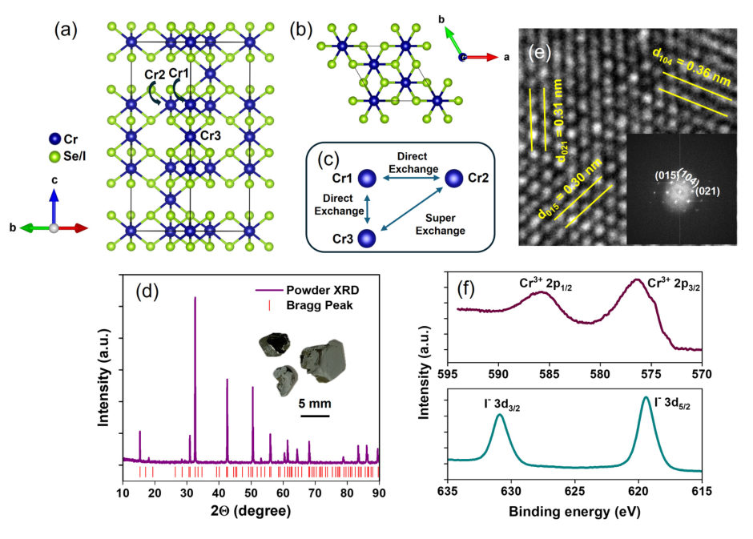
<figcaption class="paper-figure-caption"><b>Fig 1.</b> FIG. 1. (a), (b) Crystal structure of Cr2Se3. (c) Different direct and superexchange interactions between the Cr atoms in the unit cell. (d) Powder XRD pattern of I@Cr2Se3 at room temperature. The Bragg positions corresponding to pure Cr2Se3 are also indicated. Inset: millimeter-sized CVT-grown I@Cr2Se3 crystals. (e) High-resolution TEM image of doped crystal. Three different lattice planes, (021), (015) and (104) with their corresponding d-spacings 0.31, 0.30 and 0.36 nm, respectively are also indicated in the figure. Inset: SAED of the crystal structure. The specified planes are assigned with the respective first-order spots in the SAED pattern. (f) Core-level XPS data of Cr 2p and I 3d.</figcaption>
</figure>
<figure class="paper-figure-card">
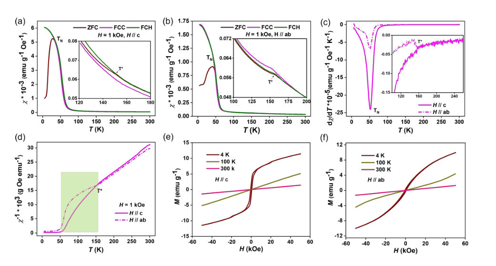
<figcaption class="paper-figure-caption"><b>Fig 2.</b> FIG. 2. Temperature dependent magnetic susceptibility χ measured in standard ZFC-FCC-FCH protocol at an applied magnetic field 1 kOe for (a) H//c and (b) H//ab direction of the crystal. Inset: zoomed-in view of the high temperature transition observed at (a) 150 K for H//c and (b) 156 K for H//ab, respectively. (c) Derivatives of the FCC plot dχ dT . The continuous line corresponds to H//c, while the dashed line represents H//ab. The dip of the plots indicates the TN = 52 K. Inset shows the high temperature regions of the two derivatives where the transition, T* is shown. (d) χ−1 −T plot for both directions. The shaded region indicates the non analytical magnetization behaviour below T*....</figcaption>
</figure>
<figure class="paper-figure-card">
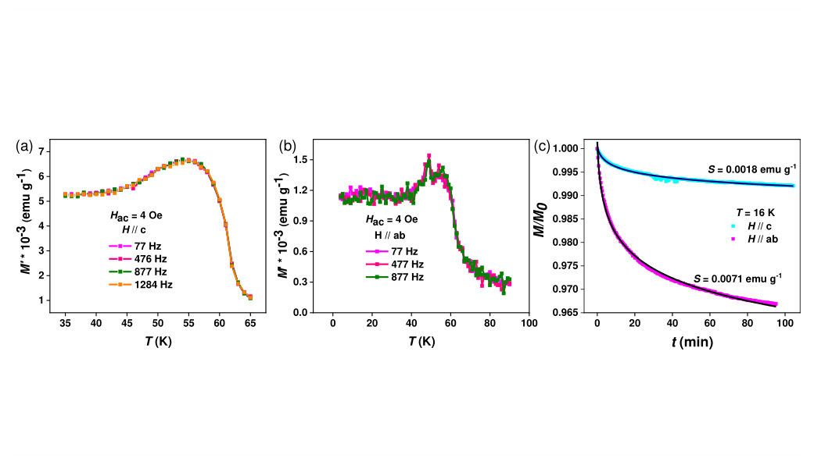
<figcaption class="paper-figure-caption"><b>Fig 3.</b> FIG. 3. (a) Temperature-dependent real part of ac magnetization measured at different frequencies for (a) H//c and (b) H//ab. (c) Isothermal remanent magnetization (IRM) measured in two different directions of the applied magnetic field relative to the sample.</figcaption>
</figure>
<figure class="paper-figure-card">
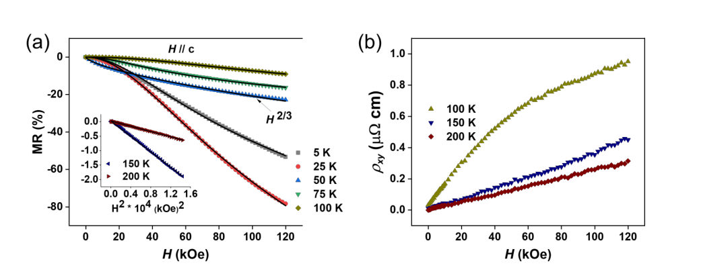
<figcaption class="paper-figure-caption"><b>Fig 4.</b> FIG. 4. (a) MR measurement: giant negative magnetoresistance at various temperatures for H//c, along with appropriate fittings using suitable models for different temperature ranges (below TN, near TN, and above TN). Above 100 K, the data are well described by the model adapted from Ref. [43], except at 50 K, where a H 2 3 dependence is observed. The insets display the high-temperature magnetoresistance behavior where MR ∝−H2. (b) Hall measurement: at 150 K and 200 K linear ρxy vs. H dependence suggests the dominating charge carriers are hole, whereas, at 100 K, the sublinear ρxy vs. H implies the existence of more than one type of charge carrier following the classical two-band model.</figcaption>
</figure>
<figure class="paper-figure-card">
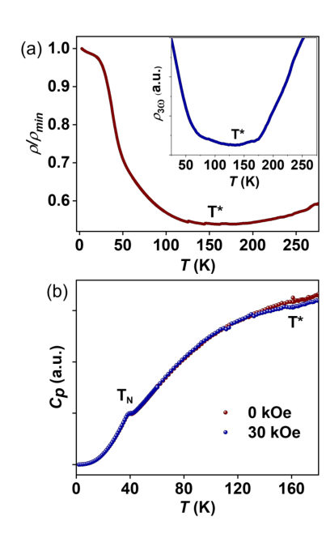
<figcaption class="paper-figure-caption"><b>Fig 5.</b> FIG. 5. (a) Temperature dependent normalized resistivity  ρ ρmin</figcaption>
</figure>
</div>
<p><strong>Summary.</strong> This work comprehensively investigates iodine-doped $  ext{Cr}_2   ext{Se}_3$, a quasi-2D magnetic material, by combining structural, magnetic, and transport measurements. The key finding is the identification of a magnetically coupled transport crossover near $150 	ext{ K}$, which is responsible for the giant negative magnetoresistance observed. The study establishes this material as a promising platform for tuning correlated electronic and magnetic properties.</p>
<p><strong>Why it may be interesting.</strong> The strong coupling between magnetism and charge transport, evidenced by giant negative magnetoresistance, is a hallmark of strongly correlated electron systems, making it relevant for understanding emergent spintronic functionalities.</p>
<details>
<summary>Detailed structure</summary>
<p><strong>Main problem.</strong> The study investigates the complex interplay between charge transport and magnetic ordering in iodine-incorporated $  ext{Cr}_2   ext{Se}_3$. Specifically, it focuses on understanding the origin of a high-temperature transport crossover and giant negative magnetoresistance.</p>
<p><strong>Main result.</strong> The high-temperature anomaly is identified as a broad, magnetically coupled transport crossover driven by short-range magnetic correlations and channel redistribution, rather than a structural transition. The anion incorporation proves an effective tuning mechanism for spintronic properties.</p>
<p><strong>Method.</strong> The research employs a combination of advanced experimental techniques, including magnetotransport measurements (MR, Hall), spectroscopy (Raman, ARPES), and theoretical first-principles calculations.</p>
<p><strong>Model / system.</strong> The physical system is iodine-incorporated $    ext{Cr}_2   ext{Se}_3$, a non-van der Waals quasi-two-dimensional magnetic material with a metal-deficient NiAs-type structure. The investigation probes its magnetic state (AFM ordering below $T_N \approx 52 	ext{ K}$) and its electronic transport properties across various temperatures and magnetic fields.</p>
<p><strong>Key observables.</strong> Giant negative magnetoresistance ($\approx -78\%$), resistivity minimum near $T^* \approx 150 	ext{ K}$, hole-like conduction at high T, and magnetic susceptibility ($\chi(T)$).</p>
<p><strong>Important parameters / regimes.</strong> Temperatures $T_N \approx 52 	ext{ K}$ and $T^* \approx 150 	ext{ K}$; magnetic fields up to $15 	ext{ T}$; iodine incorporation level (8.33%).</p>
<p><strong>Assumptions / limitations.</strong> The high-temperature anomaly is interpreted as a magnetically coupled transport crossover, supported by the lack of major structural or electronic reconstruction observed via Raman and ARPES.</p>
<p><strong>Figures summary.</strong> Figures summarize structural characterization (XRD, TEM, XPS), magnetic behavior ($\chi(T)$, M-H curves), transport properties (MR vs. T, Hall measurements), and electronic structure calculations/ARPES spectra.</p>
<p><strong>Paper structure.</strong> The paper systematically characterizes the material's structure, magnetic properties (using $\chi$, M-H), and transport properties (MR, Hall, $
ho(T)$) across varying conditions, culminating in the identification of the crossover mechanism.</p>
</details>
<details>
<summary>Abstract</summary>
<p>We report the synthesis and comprehensive investigation of iodine-incorporated $Cr_2Se_3$, a non-van der Waals quasi-two-dimensional magnetic material, using structural, magnetic, transport, spectroscopic, and first-principles methods. Magnetization and electron spin resonance measurements reveal an antiferromagnetically ordered state below $T_N \approx 52$ K. At higher temperatures, a second, broader anomaly emerges near $T^* \approx 150$ K, coinciding with a shallow minimum in the temperature-dependent resistivity that resembles a metal-to-insulator-like crossover. Hall measurements indicate predominantly hole-like conduction at high temperatures ($\geq$ 150 K), while the nonlinear Hall response below T<em>, together with an anomaly in the third-harmonic electrical signal, suggests the emergence of mobility-dependent multichannel and spatially inhomogeneous transport. A large, non-saturating negative magnetoresistance reaching approximately -78\% at 25 K and 12 T further demonstrates strong coupling between charge transport and the magnetic state. Temperature-dependent Raman spectroscopy reveals no symmetry-changing structural transition near T</em>, whereas angle resolved photoemission spectroscopy (ARPES) measurements show no major reconstruction of the electronic structure occupied across the crossover. Taken together, these results identify the high-temperature anomaly as a broad magnetically coupled transport crossover arising from the interplay of short-range magnetic correlations, chemical disorder, and redistribution among competing conduction channels. These findings demonstrate that anion incorporation provides an effective route to tuning the coupled electronic and magnetic properties of non-layered Cr$_2$Se$_3$, establishing this system as a promising platform for investigating correlated transport and emergent spintronic functionalities in transition-metal chalcogenides.</p>
</details>
<p><sub><a href="#top">↑ back to top</a></sub></p>

<p><a id="paper-2609.17690"></a></p>
<h3 id="quantum-encodings-private-messages-and-communication-complexity"><a href="http://arxiv.org/abs/2609.17690v1">Quantum Encodings, Private Messages, and Communication Complexity</a></h3>
<p><strong>Authors:</strong> Tom Gur, Miryam Mi-Ying Huang, Er-Cheng Tang<br>
<strong>Type:</strong> theory · <strong>Category:</strong> quantum information and computing · <strong>PDF:</strong> <a href="https://arxiv.org/pdf/2609.17690v1">https://arxiv.org/pdf/2609.17690v1</a><br>
<strong>Analysis basis:</strong> full PDF text, analyzed in chunks</p>
<div class="figure-strip-hint">↔ Scroll figures horizontally</div>
<div class="paper-figures-scroll">
<figure class="paper-figure-card">
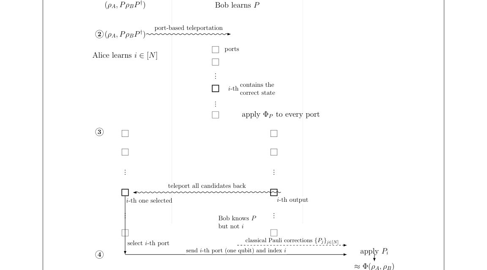
<figcaption class="paper-figure-caption"><b>Fig 1.</b> Figure 1: Pauli-Port Complementarity Protocol. The protocol is non-interactive. Teleportation arrows denote local teleportation measurements using pre-shared entanglement, not communication between Alice and Bob.</figcaption>
</figure>
</div>
<p><strong>Summary.</strong> This work analyzes the resource requirements for quantum data encoding and private quantum communication protocols. It establishes a crucial link between quantum encoding size and communication complexity, showing that pre-shared entanglement plays a central role. The findings are particularly insightful for understanding the limitations and efficiencies of quantum information processing for structured versus general quantum channels.</p>
<p><strong>Why it may be interesting.</strong> While focused on complexity theory, the results provide fundamental bounds on how much quantum information needs to be shared or encoded to simulate quantum processes, which underpins quantum network security and computation.</p>
<details>
<summary>Detailed structure</summary>
<p><strong>Main problem.</strong> The paper studies the complexity of quantum decomposable randomized encodings (QDRE) and establishes a deep connection between this model and the communication complexity of quantum private simultaneous message protocols (QPSM).</p>
<p><strong>Main result.</strong> The required quantum communication complexity and quantum encoding size are critically dependent on the amount of pre-shared entanglement, with structured channels (Clifford-induced) allowing for significantly reduced communication complexity.</p>
<p><strong>Method.</strong> The authors establish bi-directional connections between the QDRE model and QPSM, utilizing techniques involving teleportation, Pauli operators, and complexity bounding arguments.</p>
<p><strong>Model / system.</strong> The core models are QDREs, which encode quantum circuits, and QPSM protocols, which secure the computation of an arbitrary quantum channel $\Phi$ among multiple parties.</p>
<p><strong>Key observables.</strong> Quantum Encoding Size, Quantum Communication Complexity, Pre-shared Entanglement.</p>
<p><strong>Important parameters / regimes.</strong> The relationship between the required resources (entanglement vs. communication) for general vs. structured quantum channels.</p>
<p><strong>Assumptions / limitations.</strong> The analysis distinguishes between general quantum channels and a structured class called Clifford-induced channels, which permits complexity reduction.</p>
<p><strong>Figures summary.</strong> Figure 1 illustrates the Pauli-Port Complementarity Protocol, detailing the steps involving ordinary teleportation and port-based teleportation to achieve privacy.</p>
<p><strong>Paper structure.</strong> The paper first introduces the models (QDRE and QPSM), then presents general upper and lower bounds for arbitrary channels, followed by specialized results for Clifford-induced channels, and finally derives corollaries for the quantum encoding size.</p>
</details>
<details>
<summary>Abstract</summary>
<p>We study the complexity of quantum decomposable randomized encodings (QDRE). We establish a bi-directional connection between the QDRE model and the communication complexity model of quantum private simultaneous message protocols (QPSM), where classical communication is free, and quantum communication is the primary complexity measure. We show the following upper and lower bounds. (1) For every quantum channel mapping $n$ to $m$ qubits, we give a QPSM protocol with quantum communication $m$, using exponential pre-shared entanglement. In particular, constant-output channels have $O(1)$ quantum communication, and classical-output channels require no quantum communication. (2) With $O(n)$ pre-shared entanglement, every one-qubit-output channel has an $O(n)$-quantum-communication QPSM protocol. Conversely, there exists a channel and a constant $c>0$ for which any protocol with at most $cn$ pre-shared entanglement requires $Ω(n)$ quantum communication. (3) In contrast, we identify a structured class of quantum channels, Clifford-induced channels, for which there exist QPSM protocols with $O(n)$ pre-shared entangled qubits and only $O(1)$ quantum communication complexity. Through our connection, we obtain analogous upper and lower bounds on the quantum encoding size of QDRE. Our results show that the amount of pre-shared entanglement plays a central role in quantum encoding size and quantum communication complexity.</p>
</details>
<p><sub><a href="#top">↑ back to top</a></sub></p>

<p><a id="paper-2609.17941"></a></p>
<h3 id="renyi-and-tsallis-information-entropies-for-a-harmonic-position-dependent-mass"><a href="http://arxiv.org/abs/2609.17941v1">Rényi and Tsallis information entropies for a harmonic position-dependent mass</a></h3>
<p><strong>Authors:</strong> Dorcas A. Addo, Daniel Sabi-Takou, Eugene Adjei, Latévi M. Lawson<br>
<strong>Type:</strong> theory · <strong>Category:</strong> statistical mechanics · <strong>PDF:</strong> <a href="https://arxiv.org/pdf/2609.17941v1">https://arxiv.org/pdf/2609.17941v1</a><br>
<strong>Analysis basis:</strong> full PDF text, analyzed in chunks</p>
<div class="figure-strip-hint">↔ Scroll figures horizontally</div>
<div class="paper-figures-scroll">
<figure class="paper-figure-card">

<figcaption class="paper-figure-caption"><b>Fig 1.</b> Figure 1: Probability density function in position space for fixed values of parameter τ and quantum number n.</figcaption>
</figure>
<figure class="paper-figure-card">
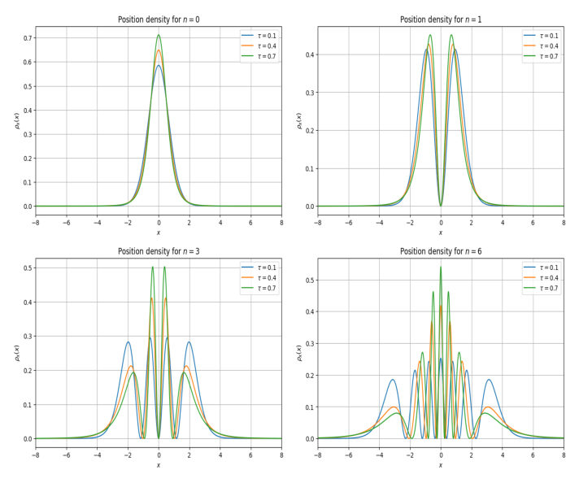
<figcaption class="paper-figure-caption"><b>Fig 2.</b> Figure 1 depicts probability density plots for the states n = 0; n = 1; n = 3; n = 6 for some fixed values of τ = 0.1; 0.4; 0.7. It can be seen that the probability of finding a particle is increasing with the quantum numbers and the for the parameters of deformation when x ∈[−2, 2]. However, this probability is discreasing when the position tends to the infinities. On the other hand, the Fourier transform of the position eigenfunction ϕλ n(x) given by (7) provides the eigenfunction of the system in the conjugated momentum space as</figcaption>
</figure>
<figure class="paper-figure-card">
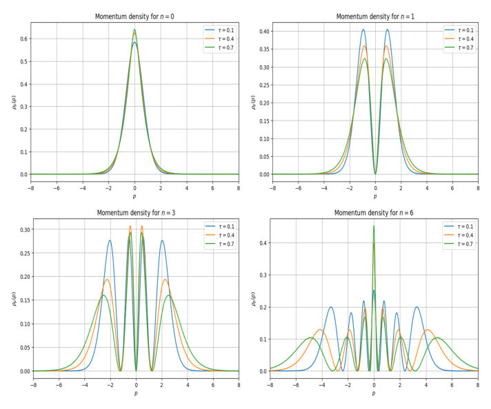
<figcaption class="paper-figure-caption"><b>Fig 3.</b> Figure 2: Density function in momentum space for fixed values of parameter τ and quantum number n.</figcaption>
</figure>
<figure class="paper-figure-card">
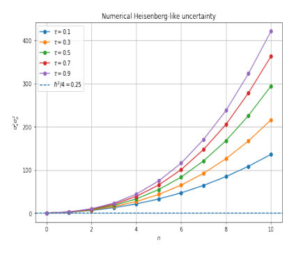
<figcaption class="paper-figure-caption"><b>Fig 4.</b> Figure 3: Heisenberg uncertainty (23) as function of quantum number n for fixed values of parameter τ</figcaption>
</figure>
<figure class="paper-figure-card">
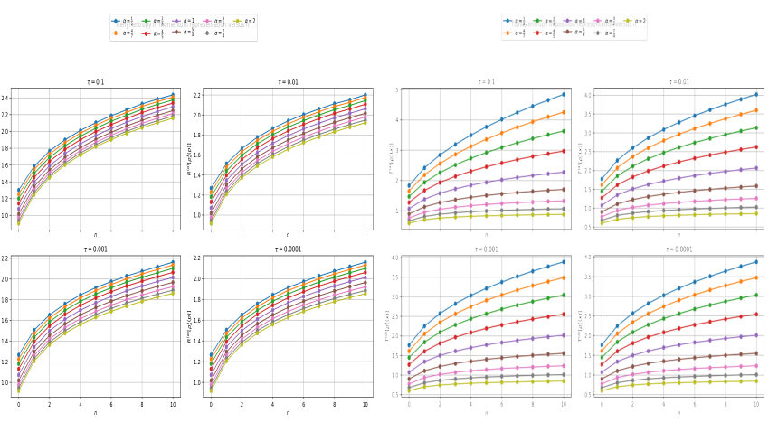
<figcaption class="paper-figure-caption"><b>Fig 5.</b> Figure 4: R´enyi entropy (58) (left 4-subplots) and Tsallis entropy(61) (right 4-subplots) as functions n for fixed values of parameters α and τ.</figcaption>
</figure>
</div>
<p><strong>Summary.</strong> This paper analyzes Rényi and Tsallis information entropies for a quantum harmonic oscillator model featuring a position-dependent mass. By calculating these generalized entropies in both position and momentum space, the authors confirm that these quantities correctly reduce to the standard Shannon entropy in the appropriate limit. The work extends the understanding of quantum uncertainty relations to systems with non-standard mass profiles.</p>
<p><strong>Why it may be interesting.</strong> The study of generalized entropies (Rényi/Tsallis) applied to non-standard Hamiltonians (PDM) provides a generalized framework for understanding quantum uncertainty beyond the standard Heisenberg relation, which is relevant for complex quantum systems.</p>
<details>
<summary>Detailed structure</summary>
<p><strong>Main problem.</strong> The paper investigates the behavior of Rényi and Tsallis information entropies for a quantum system characterized by a position-dependent mass.</p>
<p><strong>Main result.</strong> The calculated information entropies approach the standard Shannon entropy limit when the entropic parameter alpha approaches 1, and the results validate known behaviors in the asymptotic limit.</p>
<p><strong>Method.</strong> The authors use analytical and numerical techniques involving Gegenbauer polynomials and modified Bessel functions to evaluate the entropic moments in both position and momentum representations.</p>
<p><strong>Model / system.</strong> The system is a particle confined in a harmonic oscillator potential, but with a position-dependent mass $m(x) = m_0 / (1 + 	au x^2)^2$. The Hamiltonian is derived from this structure.</p>
<p><strong>Key observables.</strong> Rényi and Tsallis information entropies ($R(\alpha), T(\alpha)$) in both position and momentum space, and related entropy-based uncertainty relations.</p>
<p><strong>Important parameters / regimes.</strong> The entropic parameter $\alpha$, the deformation parameter $ au$, and the quantum number $n$. The analysis also considers the limit $\alpha 	o 1$ and $    au  o 0$.</p>
<p><strong>Assumptions / limitations.</strong> Due to the complexity of position entropy integrals, the authors evaluate the asymptotic limit. The momentum entropy calculation is performed without approximation theory.</p>
<p><strong>Figures summary.</strong> The notes mention figures showing momentum probability densities and plots of Rényi/Tsallis entropies in momentum space versus the quantum number $n$. Tables summarize numerical values for uncertainty relations.</p>
<p><strong>Paper structure.</strong> The paper first establishes the Hamiltonian and eigenfunctions using Gegenbauer polynomials. It then calculates the information entropies in both representations, noting the difficulty in the position space and using the asymptotic limit. Finally, it evaluates the related entropic uncertainty relations numerically.</p>
</details>
<details>
<summary>Abstract</summary>
<p>In this paper, we study Renyi and Tsallis information entropies for a Hamiltonian system with position-dependent mass confined in harmonic oscillator potential. Gegenbauer polynomials are used to obtain the position eigenfunction of such a system, and the modified Bessel function of the second kind is used to determine the equivalent momentum eigenfunction. By means of probability densities of both representations, we analytically and numerically evaluate the Heisenberg-like uncertainty of this system. Because the Renyi and Tsallis information entropies in position representation are described by integral functionals of the Gegenbauer polynomials, these quantities are much more difficult to calculate. To get around this problem, we evaluate these information entropies at the system s asymptotical limit, which corresponds to the behavior of an undeformed harmonic oscillator. Nevertheless, no approximation method is used to obtain the Tsallis and Renyi information entropies in momentum representation. In both representations, we find that these information entropies approach the Shannon entropy when the entropic parameter alpha-&gt; 1 and are closed to the results of similar models of the literature. Finally, we evaluate the related entropic uncertainty relations numerically to validate the latter obersevations.</p>
</details>
<p><sub><a href="#top">↑ back to top</a></sub></p>

<p><a id="paper-2609.18350"></a></p>
<h3 id="signatures-of-chaos-in-a-quasiperiodically-driven-quantum-impact-oscillator"><a href="http://arxiv.org/abs/2609.18350v1">Signatures of Chaos in a Quasiperiodically Driven Quantum Impact Oscillator</a></h3>
<p><strong>Authors:</strong> Deepshikha Singh, Titir Mukherjee, Soumitro Banerjee<br>
<strong>Type:</strong> theory · <strong>Category:</strong> other · <strong>PDF:</strong> <a href="https://arxiv.org/pdf/2609.18350v1">https://arxiv.org/pdf/2609.18350v1</a><br>
<strong>Analysis basis:</strong> full PDF text, analyzed in chunks</p>
<div class="figure-strip-hint">↔ Scroll figures horizontally</div>
<div class="paper-figures-scroll">
<figure class="paper-figure-card">
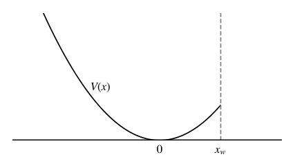
<figcaption class="paper-figure-caption"><b>Fig 1.</b> Figure 2: The graphical representation of the impact oscillator potential V(x).</figcaption>
</figure>
<figure class="paper-figure-card">
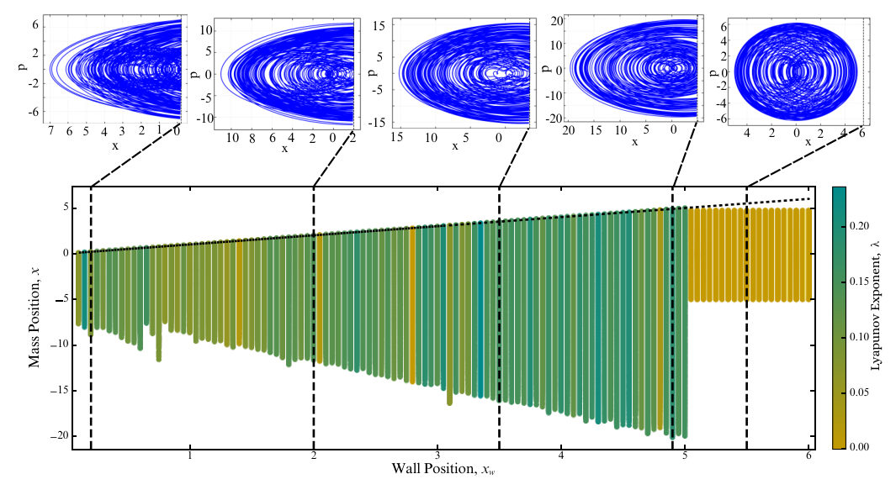
<figcaption class="paper-figure-caption"><b>Fig 2.</b> Figure 3: Bifurcation diagram of the impact oscillator system with quasiperiodic drive. Here, the color represents the Lyapunov exponent for each wall position. The panels on the top are the phase-space trajectories for selected wall positions.</figcaption>
</figure>
<figure class="paper-figure-card">
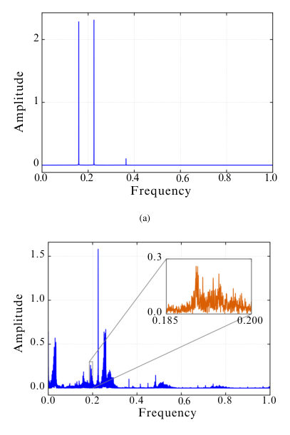
<figcaption class="paper-figure-caption"><b>Fig 3.</b> Figure 4: Fourier spectrum of the position x time series. (a) xw = 5.5, shows three discrete peaks corresponding to the three frequencies ωi/2π, where i = 0, 1, 2. (b) xw = 4.9 shows a continuous spectrum, clearly seen in the inset.</figcaption>
</figure>
<figure class="paper-figure-card">
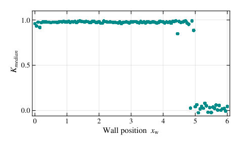
<figcaption class="paper-figure-caption"><b>Fig 4.</b> Figure 5: The result of the 0-1 test with varying wall position xw. Kmedian ≈1 suggests chaotic dynamics, and Kmedian ≈0 indicate a regular dynamics.</figcaption>
</figure>
<figure class="paper-figure-card">
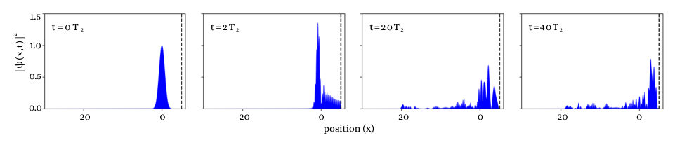
<figcaption class="paper-figure-caption"><b>Fig 5.</b> Figure 6: Snapshots of the probability density at four different times showing the temporal evolution of the wavefunction under quasiperiodic driving. The dashed vertical line marks the wall position, xw = 5. The driving frequencies are chosen as ω1 = √</figcaption>
</figure>
</div>
<p><strong>Summary.</strong> This paper analyzes quantum chaos in a driven impact oscillator, demonstrating that quasiperiodic driving near a grazing collision point induces robust chaotic signatures. By comparing diagnostics like OTOC and fidelity decay across different driving frequencies, the authors show that while initial scrambling is general, the long-term global scrambling is highly sensitive to the irrationality of the driving ratio.</p>
<p><strong>Why it may be interesting.</strong> It provides a concrete, analytically tractable model (impact oscillator) to study the transition to quantum chaos, using advanced diagnostics like OTOC and fidelity decay, which are central to quantum information theory.</p>
<details>
<summary>Detailed structure</summary>
<p><strong>Main problem.</strong> The study investigates the emergence of quantum-chaotic dynamics in a quasiperiodically driven impact oscillator, contrasting this with previous findings of strange nonchaotic dynamics under periodic driving.</p>
<p><strong>Main result.</strong> The research establishes that quasiperiodic driving near the grazing condition generates robust signatures of quantum chaos, with global scrambling being strongly influenced by the irrationality of the driving frequency ratio.</p>
<p><strong>Method.</strong> The study employs both classical analysis (bifurcation diagrams, Lyapunov exponents) and quantum diagnostics (Shannon entropy, OTOC, Fidelity) to characterize the dynamics.</p>
<p><strong>Model / system.</strong> The physical system is an impact oscillator, modeled by a time-dependent Hamiltonian incorporating a potential and a quasiperiodic driving force $F(t) = a \sin(\omega_1 t) + b \cos(\omega_2 t)$.</p>
<p><strong>Key observables.</strong> Shannon entropy time series, 0-1 test values, finite-time Lyapunov exponents, Out-of-time-order correlator (OTOC), and Fidelity decay.</p>
<p><strong>Important parameters / regimes.</strong> The grazing condition, the ratio of driving frequencies ($\omega_r$), and the perturbation strength ($\epsilon$).</p>
<p><strong>Assumptions / limitations.</strong> The quantum dynamics are governed by the time-dependent Schrödinger equation, and the classical system assumes perfectly elastic collisions.</p>
<p><strong>Figures summary.</strong> Figures illustrate the potential, and the results summarize diagnostics like the 0-1 test and fidelity decay for different frequency ratios.</p>
<p><strong>Paper structure.</strong> The paper first establishes the classical transition to chaos, then applies quantum diagnostics (Shannon entropy, OTOC, Fidelity) to show robust quantum signatures of chaos, concluding with a discussion on the role of frequency irrationality.</p>
</details>
<details>
<summary>Abstract</summary>
<p>We demonstrate the emergence of quantum-chaotic dynamics in a quasiperiodically driven impact oscillator near the grazing condition. While previous studies of the quantum impact oscillator under periodic driving reported strange nonchaotic dynamics, we show that quasiperiodic driving produces robust signatures of chaos. The corresponding classical system undergoes a sharp grazing-induced transition from quasiperiodic motion to chaos, as established by bifurcation analysis, Lyapunov exponents, Fourier spectra, and the 0-1 test. In the quantum system, Shannon-entropy time series exhibit broadband spectra, 0-1 test values close to unity, and predominantly positive finite-time Lyapunov exponents for both rational and irrational driving-frequency ratios. Independent quantum diagnostics reinforce this result: the out-of-time-order correlator (OTOC) displays early-time exponential growth with nearly identical rates, while the golden-ratio drive leads to a substantially faster saturation of the OTOC. Fidelity exhibits an exponential decay regime that is approximately independent of perturbation strength. These results establish quasiperiodic driving near grazing as a mechanism for generating quantum-chaotic behavior and reveal that, although the initial onset of scrambling is largely insensitive to frequency-ratio rationality, the subsequent development of global scrambling is strongly influenced by the degree of irrationality of the drive.</p>
</details>
<p><sub><a href="#top">↑ back to top</a></sub></p>

<p><a id="paper-2609.18463"></a></p>
<h3 id="simplification-rules-for-continuous-time-quantum-walks-on-dynamic-graphs"><a href="http://arxiv.org/abs/2609.18463v1">Simplification Rules for Continuous-Time Quantum Walks on Dynamic Graphs</a></h3>
<p><strong>Authors:</strong> Mostafa Atallah, Daniel Dilley, Jishnu Mahmud, Zain H Saleem, Rebekah Herrman<br>
<strong>Type:</strong> theory · <strong>Category:</strong> quantum information and computing · <strong>PDF:</strong> <a href="https://arxiv.org/pdf/2609.18463v1">https://arxiv.org/pdf/2609.18463v1</a><br>
<strong>Analysis basis:</strong> full PDF text, analyzed in chunks</p>
<div class="figure-strip-hint">↔ Scroll figures horizontally</div>
<div class="paper-figures-scroll">
<figure class="paper-figure-card">
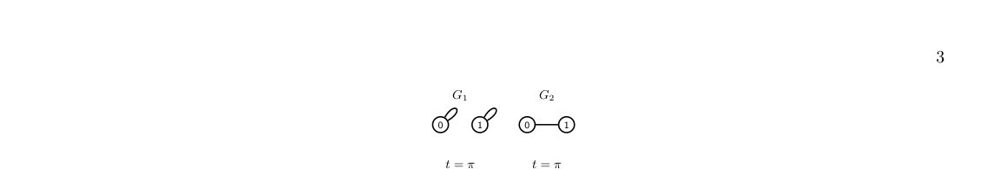
<figcaption class="paper-figure-caption"><b>Fig 1.</b> FIG. 1: Identity gate as a dynamic graph sequence. Note each graph and corresponding time in this sequence corresponds to a −I gate.</figcaption>
</figure>
<figure class="paper-figure-card">
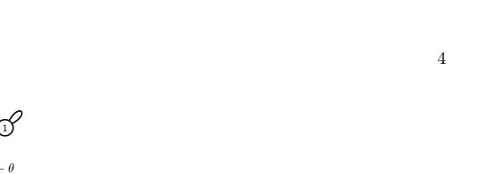
<figcaption class="paper-figure-caption"><b>Fig 2.</b> FIG. 2: The P(θ) gate as a dynamic graph sequence.</figcaption>
</figure>
<figure class="paper-figure-card">
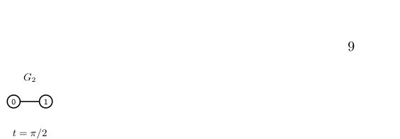
<figcaption class="paper-figure-caption"><b>Fig 3.</b> FIG. 3: Original X gate</figcaption>
</figure>
<figure class="paper-figure-card">
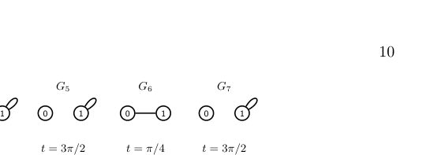
<figcaption class="paper-figure-caption"><b>Fig 4.</b> FIG. 4: HZH</figcaption>
</figure>
<figure class="paper-figure-card">
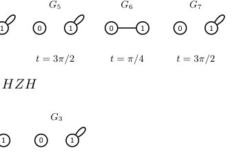
<figcaption class="paper-figure-caption"><b>Fig 5.</b> FIG. 5: Simplified HZH, equivalent to X gate.</figcaption>
</figure>
</div>
<p><strong>Summary.</strong> This paper introduces simplification rules for Continuous-Time Quantum Walks (CTQWs) on dynamic graphs, treating these rules as the CTQW equivalent of circuit identities. By developing these rewrite rules, the authors show how complex sequences of time-evolving Hamiltonians can be drastically shortened while preserving the implemented quantum unitary. This offers a new, compact framework for representing and compiling quantum circuits.</p>
<p><strong>Why it may be interesting.</strong> This work provides a powerful, graph-theoretic analogue to circuit identities, which is highly relevant for quantum information theorists developing efficient quantum compilation and transpilation tools.</p>
<details>
<summary>Detailed structure</summary>
<p><strong>Main problem.</strong> The primary goal is to develop simplification rules for Continuous-Time Quantum Walks (CTQWs) on dynamic graphs to significantly shorten the sequence of time-evolving Hamiltonians required to implement a specific unitary transformation.</p>
<p><strong>Main result.</strong> The authors successfully derived new graph rewrite rules and demonstrated that standard single-qubit gates, as well as the $n$-th root of any single-qubit gate, can be realized efficiently within the CTQW framework.</p>
<p><strong>Method.</strong> The work involves deriving and applying graph rewrite rules (simplification techniques) to the time evolution operator, which is calculated as the time-ordered exponential of a sequence of time-dependent graph Hamiltonians.</p>
<p><strong>Model / system.</strong> The system is Continuous-Time Quantum Walks (CTQWs) operating on dynamic graphs. The dynamics are governed by the time evolution operator $e^{-iA_{total}t}$, where $A_{total}$ is constructed from a sequence of time-evolving graph Hamiltonians derived from the graph's adjacency matrix.</p>
<p><strong>Key observables.</strong> The implemented unitary transformation (e.g., Identity, $P(	heta)$, $R_x(\alpha)$), and the resulting simplified graph sequence.</p>
<p><strong>Important parameters / regimes.</strong> Time evolution times ($t$), graph structure (adjacency matrices $A$), and angular parameters ($ heta, \phi, \lambda, \alpha$).</p>
<p><strong>Assumptions / limitations.</strong> The list of simplification rules presented is not claimed to be exhaustive, and the framework assumes the equivalence between the circuit model and the dynamic graph model.</p>
<p><strong>Figures summary.</strong> Figures illustrate the realization of specific gates (like Identity and $P(	heta)$) using dynamic graph sequences, and later figures demonstrate the simplification of complex sequences (like $X$ gate evolution) into shorter, equivalent forms.</p>
<p><strong>Paper structure.</strong> The paper first establishes the context of CTQWs as a universal quantum computation model. It then details the construction of fundamental gates ($iI, -iI, P(	heta)$) using specific graph sequences. The core of the work introduces and proves several graph rewrite rules (Observations IV.1-IV.5) to simplify these sequences, culminating in the realization of general gates and roots.</p>
</details>
<details>
<summary>Abstract</summary>
<p>Continuous-time quantum walks (CTQWs) on dynamic graphs realize quantum gates as sequences of time-evolving graph Hamiltonians, but naive constructions produce long sequences with redundancy. Simplification rules, which are graph rewrite rules that shorten a dynamic graph sequence while preserving the unitary it implements, are the CTQW analogue of circuit identities in the gate model. In this work, we give CTQW realizations of the standard single-qubit gates and introduce new graph rewrite rules. We demonstrate the simplification rules through worked circuit reductions and outline their use as transpilation primitives for converting between the circuit model and the dynamic graph framework.</p>
</details>
<p><sub><a href="#top">↑ back to top</a></sub></p>

<p><a id="paper-2609.18568"></a></p>
<h3 id="spectral-optimization-for-absolutely-ppt-states-purity-entropy-and-volume-decay"><a href="http://arxiv.org/abs/2609.18568v1">Spectral Optimization for Absolutely PPT States: Purity, Entropy, and Volume Decay</a></h3>
<p><strong>Authors:</strong> Anh T. Tran<br>
<strong>Type:</strong> theory · <strong>Category:</strong> quantum information and computing · <strong>PDF:</strong> <a href="https://arxiv.org/pdf/2609.18568v1">https://arxiv.org/pdf/2609.18568v1</a><br>
<strong>Analysis basis:</strong> full PDF text, analyzed in chunks</p>
<div class="figure-strip-hint">↔ Scroll figures horizontally</div>
<div class="paper-figures-scroll">
<figure class="paper-figure-card">
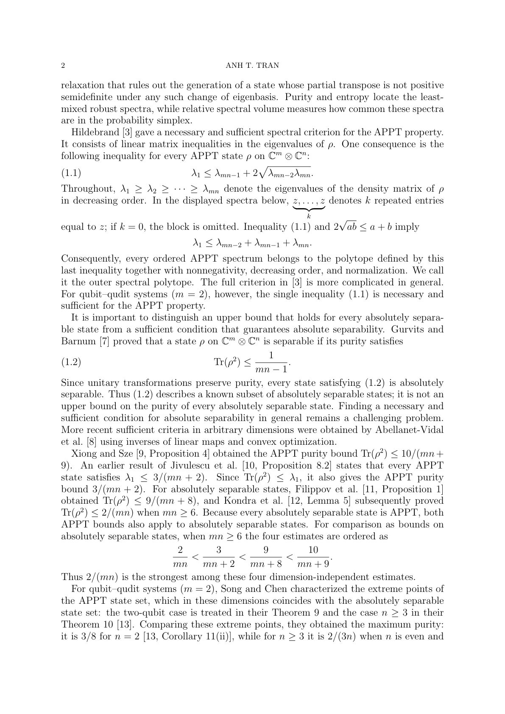
<figcaption class="paper-figure-caption"><b>Fig 1.</b> Low-resolution page preview, page 2</figcaption>
</figure>
<figure class="paper-figure-card">
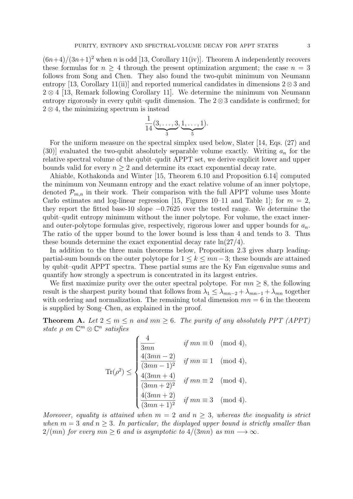
<figcaption class="paper-figure-caption"><b>Fig 2.</b> Low-resolution page preview, page 3</figcaption>
</figure>
<figure class="paper-figure-card">
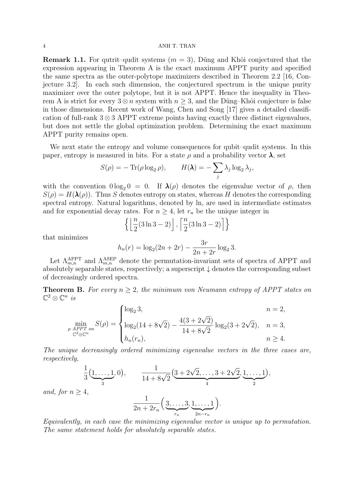
<figcaption class="paper-figure-caption"><b>Fig 3.</b> Low-resolution page preview, page 4</figcaption>
</figure>
<figure class="paper-figure-card">
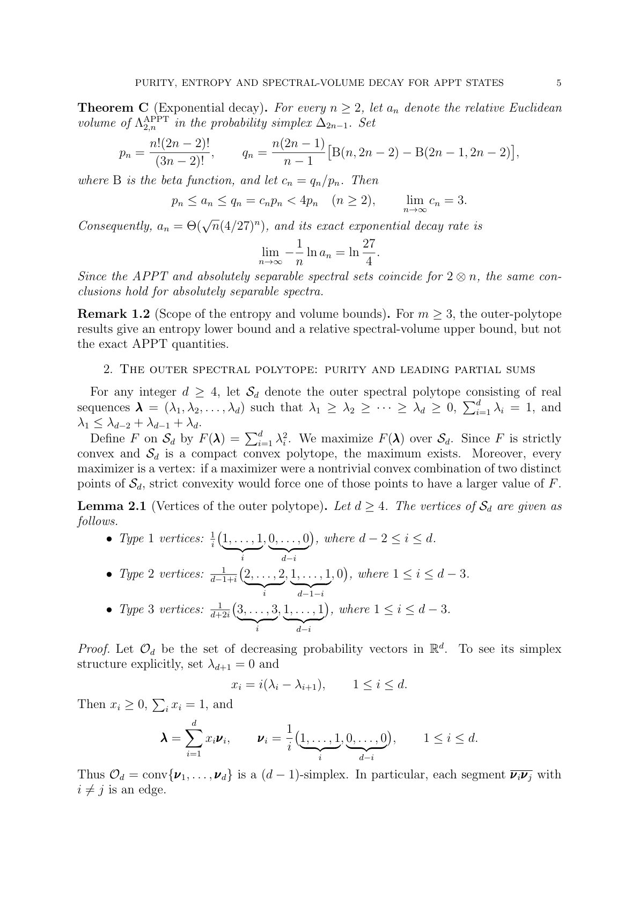
<figcaption class="paper-figure-caption"><b>Fig 4.</b> Low-resolution page preview, page 5</figcaption>
</figure>
<figure class="paper-figure-card">
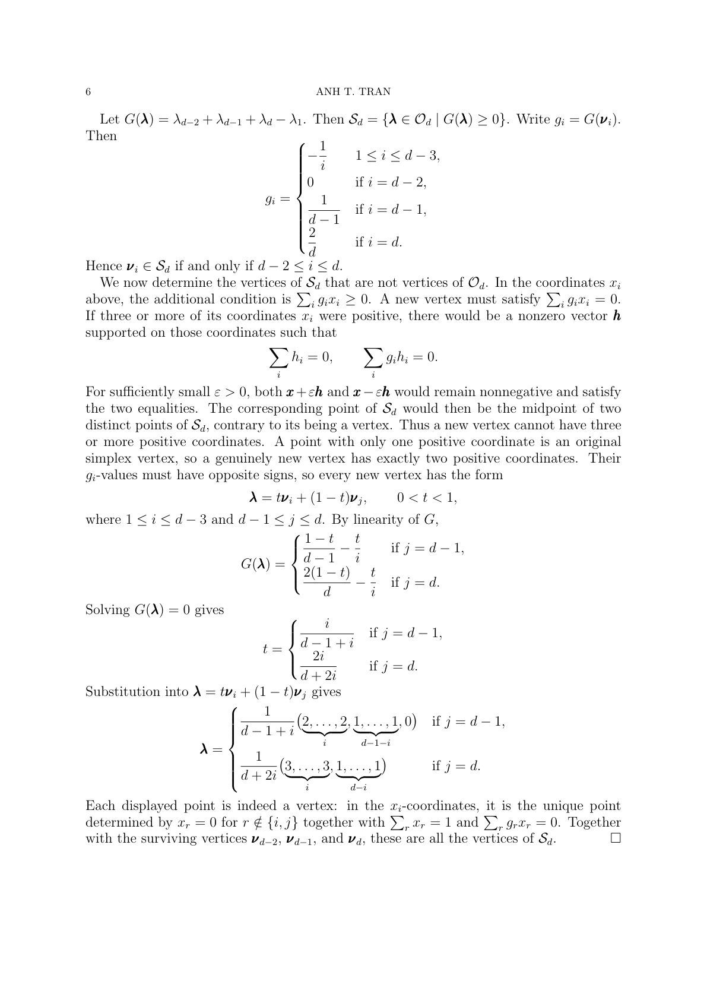
<figcaption class="paper-figure-caption"><b>Fig 5.</b> Low-resolution page preview, page 6</figcaption>
</figure>
</div>
<p><strong>Summary.</strong> This paper provides a deep mathematical analysis of spectral properties for Absolutely PPT quantum states in bipartite systems. It derives sharp upper bounds for purity and determines the minimum entropy for specific dimensions. Crucially, it quantifies the exponential decay rate of the spectral volume, offering precise tools for characterizing quantum state sets.</p>
<p><strong>Why it may be interesting.</strong> The work provides sharp, quantitative bounds on fundamental quantum information measures (purity, entropy) for a physically relevant class of states (APPT), which has implications for understanding entanglement and separability in multipartite systems.</p>
<details>
<summary>Detailed structure</summary>
<p><strong>Main problem.</strong> The paper investigates the maximum purity, minimum von Neumann entropy, and relative spectral volume of Absolutely PPT (APPT) quantum states.</p>
<p><strong>Main result.</strong> It establishes a dimension-dependent upper bound on the purity of APPT states, improves previous bounds, and determines the exact exponential decay rate of the spectral volume for qubit-qudit systems.</p>
<p><strong>Method.</strong> The research combines optimization techniques over explicitly defined outer spectral polytopes with rigorous mathematical analysis, including interval arithmetic for entropy bounding.</p>
<p><strong>Model / system.</strong> The study focuses on bipartite quantum states $
ho$ on $C^m \otimes C^n$, specifically analyzing the properties of APPT states, which are constrained by linear matrix inequalities derived from the PPT condition.</p>
<p><strong>Key observables.</strong> Purity ($  ext{Tr}(
ho^2)$), Von Neumann Entropy ($S(
ho)$), and the relative spectral volume of the state set ($  ext{rvol}(\Lambda_{ ext{APPT}})$).</p>
<p><strong>Important parameters / regimes.</strong> Bipartite dimensions ($m, n$), and the asymptotic ratio of volumes, which tends to 3.</p>
<p><strong>Assumptions / limitations.</strong> The analysis relies on characterizing the APPT property via the outer spectral polytope and assumes that optimization over this polytope yields the extremal values.</p>
<p><strong>Figures summary.</strong> Not specified.</p>
<p><strong>Paper structure.</strong> The paper progresses by first establishing purity bounds and disproving conjectures for specific dimensions ($3\otimes n$). It then tackles the minimum entropy for $2\otimes n$ systems, followed by detailed calculations of the relative spectral volume decay rate, and finally, rigorous bounding of the entropy minimum using interval arithmetic.</p>
</details>
<details>
<summary>Abstract</summary>
<p>We study maximum purity and minimum von Neumann entropy of absolutely positive partial transpose (APPT) states, together with the relative volume of their spectral sets. A consequence of Hildebrand's criterion gives an explicit outer spectral polytope, whose vertices we classify. Optimizing purity over this polytope, together with the Song--Chen result for the $2\otimes3$ system, yields, for every $mn\ge6$, an explicit upper bound on the purity of APPT states that is asymptotic to $4/(3mn)$. This improves the previous $2/(mn)$ upper bound for absolutely separable states. The new bound applies to every APPT state, a class containing all absolutely separable states, and is sharp for every $2\otimes n$ system with $n\ge3$. For every $3\otimes n$ system with $n\ge3$, however, the unique outer-polytope maximizer is not APPT, so the bound is strict and disproves the Dũng--Khôi qutrit--qudit conjecture. The polytope also gives an explicit entropy lower bound in arbitrary bipartite dimensions and, together with the Song--Chen extreme-point classification, the exact minimum entropy for every $2\otimes n$ system. Finally, exact formulas for the relative volumes of an inner polytope and the outer spectral polytope give explicit two-sided bounds on the qubit--qudit relative spectral volume $a_n$ whose ratio is less than $4$ and tends to $3$. Consequently, $a_n=Θ\!\left(\sqrt n(4/27)^n\right)$, and the relative volume of the qubit--qudit APPT spectral set (equivalently, the absolutely separable spectral set) has exact exponential decay rate $\ln(27/4)$.</p>
</details>
<p><sub><a href="#top">↑ back to top</a></sub></p>

<p><a id="paper-2609.18222"></a></p>
<h3 id="unbounded-holevo-additivity-gaps-in-finite-dimensions"><a href="http://arxiv.org/abs/2609.18222v1">Unbounded Holevo additivity gaps in finite dimensions</a></h3>
<p><strong>Authors:</strong> Jinzhao Wang<br>
<strong>Type:</strong> theory · <strong>Category:</strong> quantum information and computing · <strong>PDF:</strong> <a href="https://arxiv.org/pdf/2609.18222v1">https://arxiv.org/pdf/2609.18222v1</a><br>
<strong>Analysis basis:</strong> full PDF text, analyzed in chunks</p>
<div class="figure-strip-hint">↔ Scroll figures horizontally</div>
<div class="paper-figures-scroll">
<figure class="paper-figure-card">
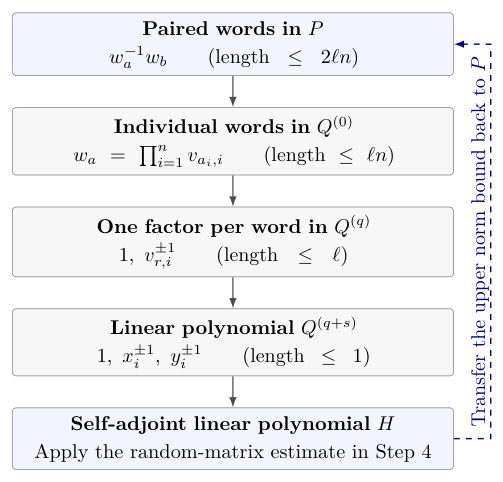
<figcaption class="paper-figure-caption"><b>Fig 1.</b> Figure 1: Allowed words at each stage of linearization. Here r labels one of the K words, and xi, yi are the two base generators in tensor factor i. The forward construction enlarges matrix coefficients; the return arrow shows how Step 4 transfers the norm bound from H to P. The shortening stage is skipped when ℓ= 1.</figcaption>
</figure>
</div>
<p><strong>Summary.</strong> This paper proves that quantum channels can exhibit unbounded two-use Holevo additivity gaps in finite dimensions. By constructing specific channels, the authors show that the classical capacity can diverge even when the single-use Holevo information vanishes. The proof relies on sophisticated tools from free probability and operator theory.</p>
<p><strong>Why it may be interesting.</strong> This work provides a rigorous, constructive proof of superadditivity gaps in finite dimensions, which challenges classical assumptions about channel capacity and has implications for quantum communication complexity.</p>
<details>
<summary>Detailed structure</summary>
<p><strong>Main problem.</strong> The paper establishes the existence of unbounded two-use Holevo additivity gaps in finite-dimensional quantum channels, demonstrating a significant advantage in classical communication rate when using the channel twice versus using it twice independently.</p>
<p><strong>Main result.</strong> It proves that for a sequence of channels, the single-use Holevo information can approach zero while the two-use Holevo information diverges, implying the channel capacity can diverge.</p>
<p><strong>Method.</strong> The proof combines advanced techniques from free probability (Haagerup inequality) with strong convergence estimates for tensor products of operators acting on finite-dimensional Hilbert spaces.</p>
<p><strong>Model / system.</strong> The analysis focuses on quantum channels $\Phi: \mathcal{M}_d(\mathbb{C}) 	o \mathcal{M}_d(\mathbb{C})$, specifically constructed using structured tensor products of complementary mixed-unitary channels derived from free-probabilistic proofs.</p>
<p><strong>Key observables.</strong> Two-use Holevo gap ($\chi(\Phi^{\otimes 2}) - 2\chi(\Phi)$), single-use Holevo quantity ($\chi(\Phi)$), and classical capacity ($C(\Phi)$).</p>
<p><strong>Important parameters / regimes.</strong> The gap scales linearly with $n$ ($\Delta\chi(T_n) = \Theta_K(n)$), and the construction requires $n$ to be sufficiently large.</p>
<p><strong>Assumptions / limitations.</strong> The analysis relies on combining Collins--Youn's product-group Haagerup inequality with Bordenave--Collins's quantitative strong-convergence estimates.</p>
<p><strong>Paper structure.</strong> The paper builds the result by first establishing the gap using free probability tools, then relating this to minimum-output-entropy gaps, and finally proving the divergence of capacity by constructing a specific sequence of channels.</p>
</details>
<details>
<summary>Abstract</summary>
<p>We establish unbounded two-use Holevo additivity gaps in finite dimensions. For each sufficiently large fixed integer $K$ and all sufficiently large $n$, we construct channels $T_n$ with output dimension $K^n$, input dimension $\exp(Θ_K(n^2))$, and \[   χ(T_n^{\otimes2})-2χ(T_n)   \ge n\left[\frac{\log_2K}{K}-2\log_2(1+9/K)\right]-O(1/n). \] The gap is linear in output qubits, with an explicit quadratic input-qubit cost and an explicit threshold on $n$. We also obtain channels whose single-use Holevo quantity tends to zero while their two-use Holevo information, and hence classical capacity, diverges. The channels arise from structured tensor products of the complementary mixed-unitary channels used in Collins's free-probabilistic proof. We establish minimum-output-entropy gaps by combining Collins--Youn's product-group Haagerup inequality with Bordenave--Collins's quantitative strong-convergence estimates</p>
</details>
<p><sub><a href="#top">↑ back to top</a></sub></p>
</details>
<h2 id="secondary-cond-mat-archives">Secondary cond-mat archives</h2>
<p><em>Papers from cond-mat.mtrl-sci, mes-hall, other, soft, supr-con. These archives are de-prioritized — they appear at the end regardless of relevance score.</em></p>
<h3 id="relevant-in-secondary-archives-8">Relevant in secondary archives (8)</h3>

<p><a id="paper-2609.18090"></a></p>
<h3 id="microscopic-theory-of-spin-torque-ferromagnetic-resonance-in-nonmagnetic-metalferromagnetic-metal-heterostructures"><a href="http://arxiv.org/abs/2609.18090v1">Microscopic theory of spin-torque ferromagnetic resonance in nonmagnetic-metal/ferromagnetic-metal heterostructures</a></h3>
<p><strong>Authors:</strong> Takumi Funato, Takeo Kato<br>
<strong>Type:</strong> theory · <strong>Category:</strong> other · <strong>PDF:</strong> <a href="https://arxiv.org/pdf/2609.18090v1">https://arxiv.org/pdf/2609.18090v1</a><br>
<strong>Analysis basis:</strong> full PDF text, analyzed in chunks
<strong>Topic relevance:</strong> <code>Keldysh / 2PI / non-Gaussian methods</code> <strong>3/5</strong> · <code>methods for driven-dissipative</code> <strong>2/5</strong> · <code>analog quantum simulation</code> <strong>1/5</strong> · <code>correlated / nonlocal dissipation</code> <strong>1/5</strong> · <code>driven-dissipative phase transition</code> <strong>1/5</strong> · <code>non-equilibrium universality</code> <strong>1/5</strong> · <code>quantum measurements</code> <strong>1/5</strong></p>
<div class="figure-strip-hint">↔ Scroll figures horizontally</div>
<div class="paper-figures-scroll">
<figure class="paper-figure-card">
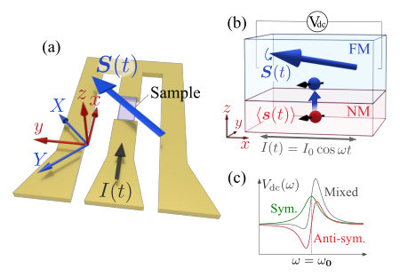
<figcaption class="paper-figure-caption"><b>Fig 1.</b> FIG. 1. Schematic illustration of the ST-FMR setup and dc-voltage spectrum. (a) Coplanar-waveguide geometry with the NM/FM sample and localized-spin direction. (b) Current- induced spin accumulation near the NM/FM interface drives the magnetization dynamics. (c) Representative dc-voltage spectrum consisting of symmetric and antisymmetric compo- nents.</figcaption>
</figure>
<figure class="paper-figure-card">
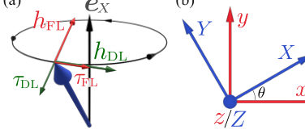
<figcaption class="paper-figure-caption"><b>Fig 2.</b> FIG. 2. Schematic illustration of (a) the localized-spin dynamics driven by the damping-like τDL and field-like τFL torques and (b) the coordinate systems. The corresponding effective magnetic fields are denoted by hDL and hFL, re- spectively. The X-axis of the magnetization-fixed coordinate system (X, Y, Z) is tilted from the x-axis of the original coor- dinate system (x, y, z) by an angle θ.</figcaption>
</figure>
<figure class="paper-figure-card">
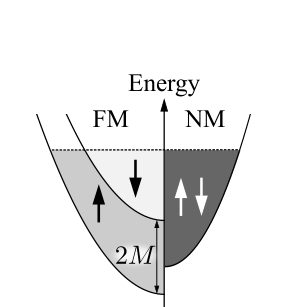
<figcaption class="paper-figure-caption"><b>Fig 3.</b> FIG. 3. Schematic illustration of the band structures of the FM and the NM. The conduction electron energy is spin-split by the s-d exchange coupling.</figcaption>
</figure>
<figure class="paper-figure-card">
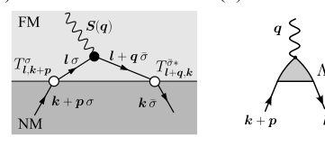
<figcaption class="paper-figure-caption"><b>Fig 4.</b> FIG. 4. (a) Schematic illustration of the interfacial exchange process involving one s-d exchange interaction and two inter- facial electron-tunneling processes. (b) Corresponding Feyn- man diagram.</figcaption>
</figure>
<figure class="paper-figure-card">
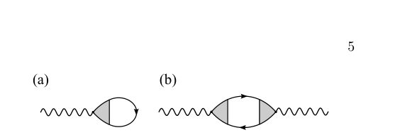
<figcaption class="paper-figure-caption"><b>Fig 5.</b> FIG. 5. Feynman diagrams for the self-energy of the magnon: (a) the effective Zeeman field and (b) the FMR frequency shift and damping modulation.</figcaption>
</figure>
</div>

<p><strong>Summary.</strong> This paper presents a comprehensive microscopic theory for Spin-Torque Ferromagnetic Resonance in NM/FM interfaces. It derives the current-induced torque and resulting dc voltage by treating the coupling between localized spins and conduction electrons. The key achievement is establishing a unified framework that links measurable magnetic resonance spectra directly to the electronic spin dynamics of the adjacent nonmagnetic metal.</p>
<p><strong>Why it may be interesting.</strong> While focused on condensed matter magnetism, the use of linear response theory, Green's functions, and the explicit calculation of dynamic susceptibilities ($\chi(\omega)$) mirrors techniques used in open quantum systems and quantum transport theory.</p>
<details>
<summary>Detailed structure</summary>
<p><strong>Main problem.</strong> The paper develops a microscopic theory to explain Spin-Torque Ferromagnetic Resonance (ST-FMR) in nonmagnetic-metal/ferromagnetic-metal (NM/FM) heterostructures.</p>
<p><strong>Main result.</strong> The theory successfully connects the measured dc voltage in ST-FMR directly to the electronic spin responses (susceptibility and conductivity) of the adjacent nonmagnetic system.</p>
<p><strong>Method.</strong> The approach uses Green's function techniques, integrating out conduction electron degrees of freedom to derive effective interfacial exchange couplings and calculating observables via linear response theory.</p>
<p><strong>Model / system.</strong> The system is an NM/FM heterostructure. The model incorporates the s-d exchange Hamiltonian, treating the FM spins via spin-wave approximations and the NM response using advanced Green's function formalism, including Rashba SOC effects.</p>
<p><strong>Key observables.</strong> dc voltage ($V_{dc}$), resonance-frequency shift ($\delta\omega_0$), damping modulation ($\delta\alpha_G$), and the Rashba–Edelstein conductivity ($\sigma_{REE}$).</p>
<p><strong>Important parameters / regimes.</strong> The analysis is sensitive to the effective magnetic fields ($\mathbf{h}_Y(\omega), \mathbf{h}_Z(\omega)$) and the frequency ($\omega$) of the applied microwave field.</p>
<p><strong>Assumptions / limitations.</strong> The theory relies on linear-response theory, the random averaging of couplings, and the use of the rotating-wave approximation for spin dynamics.</p>
<p><strong>Figures summary.</strong> Figures illustrate the ST-FMR setup and $V_{dc}$ spectrum, the role of damping-like and field-like torques, band structures showing spin splitting, and the frequency dependence of the resonance shift and damping modulation.</p>
<p><strong>Paper structure.</strong> The paper progresses by first establishing the general Hamiltonian, then deriving the effective interfacial coupling by integrating out FM electrons, and finally applying this framework to calculate specific observables like the dc voltage and spin susceptibility using advanced Green's function techniques.</p>
</details>
<details>
<summary>Abstract</summary>
<p>We develop a microscopic theory of spin-torque ferromagnetic resonance (ST-FMR) in nonmagnetic-metal/ferromagnetic-metal heterostructures. Tracing out the conduction-electron degrees of freedom in the FM, we derive an effective interfacial exchange coupling between the localized spins and the conduction electron spins in the adjacent electron system. Based on this interaction, we calculate the current-induced driving torque, resonance-frequency shift, damping modulation, and resulting dc voltage. As a concrete example, we apply the formulation to a disordered Rashba two-dimensional electron gas and demonstrate that the ST-FMR spectrum reflects the dynamical spin responses of the adjacent electron system. Our formulation applies to a broad class of heterostructures and establishes a unified microscopic framework connecting ST-FMR spectra directly to the electronic spin responses of adjacent systems.</p>
</details>
<p><sub><a href="#top">↑ back to top</a></sub></p>

<p><a id="paper-2609.18402"></a></p>
<h3 id="frohlich-bipolarons-in-two-dimensional-materials"><a href="http://arxiv.org/abs/2609.18402v1">Fröhlich Bipolarons in Two-Dimensional Materials</a></h3>
<p><strong>Authors:</strong> A. Kudlis, V. Shahnazaryan, I. Iorsh, I. A. Shelykh, I. V. Tokatly<br>
<strong>Type:</strong> theory · <strong>Category:</strong> other · <strong>PDF:</strong> <a href="https://arxiv.org/pdf/2609.18402v1">https://arxiv.org/pdf/2609.18402v1</a><br>
<strong>Analysis basis:</strong> full PDF text, analyzed in chunks
<strong>Topic relevance:</strong> <code>Keldysh / 2PI / non-Gaussian methods</code> <strong>3/5</strong> · <code>analog quantum simulation</code> <strong>1/5</strong> · <code>methods for driven-dissipative</code> <strong>1/5</strong></p>
<div class="figure-strip-hint">↔ Scroll figures horizontally</div>
<div class="paper-figures-scroll">
<figure class="paper-figure-card">
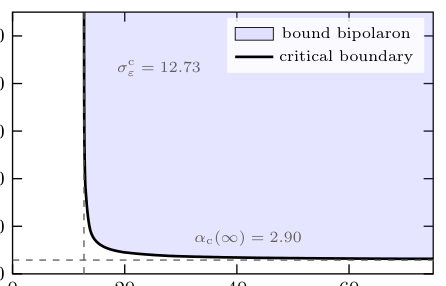
<figcaption class="paper-figure-caption"><b>Fig 1.</b> FIG. 1. Critical coupling of the dispersionless quasi-two- dimensional model under the dielectric constraint specified in the text. The blue area shows where the variational calculation favors a bound bipolaron within the displayed parameter range. The solid curve shows the calculated critical boundary. The horizontal dashed line is αc(∞) ≃2.90; the vertical dashed line marks the strong-coupling end point σc ε ≃12.73.</figcaption>
</figure>
<figure class="paper-figure-card">
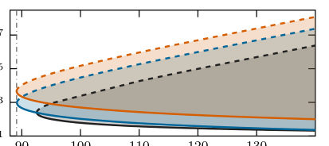
<figcaption class="paper-figure-caption"><b>Fig 2.</b> FIG. 2. Binding boundaries of the dispersive monolayer model for three representative longitudinal length ratios. (a) Lower critical coupling over the displayed σ0 range. (b) Both bound- aries near their meeting point, shown as α± eff/σL so their smooth meeting can be resolved on a linear scale. (c) The same binding windows over a broader range; the logarithmic vertical scale displays the rapidly growing upper boundary. Solid and dashed lines denote the lower and upper boundaries, respectively. The colored shading marks the displayed part of each binding region: above the lower boundary in panel (a), and between the matching lower and upper boundaries in panels (b) and (c). Binding is...</figcaption>
</figure>
</div>

<p><strong>Summary.</strong> This paper theoretically examines bipolaron formation in polar two-dimensional monolayers using a variational path-integral approach. It finds that the unique 2D screening effects drastically alter the stability landscape, showing that stable bipolarons are suppressed in the strong coupling limit. This work is crucial for predicting charge transport phenomena in next-generation 2D electronic materials.</p>
<p><strong>Why it may be interesting.</strong> The work provides a detailed theoretical framework for understanding charge carrier interactions in modern 2D materials, which is highly relevant for designing novel quantum electronic devices.</p>
<details>
<summary>Detailed structure</summary>
<p><strong>Main problem.</strong> The study investigates the formation and stability of bipolarons (pairs of charge carriers coupled to phonons) in polar monolayers, contrasting this behavior with conventional quasi-two-dimensional models.</p>
<p><strong>Main result.</strong> The stability region for bipolarons is strongly modified in monolayers, showing that no stable bipolarons exist in the strong coupling limit, contrary to expectations from simpler models.</p>
<p><strong>Method.</strong> The analysis employs the Feynman path-integral variational approach to calculate the zero-temperature ground-state energy of the system.</p>
<p><strong>Model / system.</strong> The system models two charge carriers interacting via Fröhlich electron-phonon coupling and direct Coulomb repulsion within an isolated, polar two-dimensional monolayer environment.</p>
<p><strong>Key observables.</strong> Bipolaron binding energy ($e_{bp}$), one-polaron energy ($e_{pol}$), and the critical coupling constant required for bipolaron formation.</p>
<p><strong>Important parameters / regimes.</strong> The ratio of static to high-frequency polarizability ($\sigma_0$), the effective coupling parameter ($\alpha_{eff}$), and the screening lengths ($r_0, r_\infty$).</p>
<p><strong>Assumptions / limitations.</strong> The analysis assumes an isolated monolayer environment, leading to specific nonlocal dielectric screening effects, and utilizes variational approximations in the path integral formalism.</p>
<p><strong>Figures summary.</strong> The notes detail the derivation of energy functionals and the minimization of the energy difference between one-polaron and bipolaron states using multiple variational parameters.</p>
<p><strong>Paper structure.</strong> The paper progresses from establishing the unique physics of 2D monolayers (momentum-dependent vertices, Keldysh-Rytova repulsion) to applying the variational path-integral method to calculate the ground-state energy, culminating in the determination of the stability region.</p>
</details>
<details>
<summary>Abstract</summary>
<p>Motivated by the progress in the physics of two-dimensional materials and the recent two-dimensional generalization of the Fröhlich model, we study the formation of bipolarons in polar monolayers. Because of very special nonlocal dielectric screening in two dimensions, this setting differs qualitatively from the conventional Fröhlich model. In monolayers, (i) long wavelength LO phonons acquire a nontrivial dispersion; (ii) the Fröhlich electron-phonon vertex becomes momentum-dependent and regular at small momenta; and (iii) direct repulsion between charge carriers takes the Keldysh-Rytova form. Using the Feynman path-integral variational approach, we show that the region in the parameter space where stable bipolarons exist is strongly modified compared to the usual quasi-two-dimensional model with dispersionless phonons. Specifically, in the most favorable limit, when the ratio $σ_0$ of the static polarizability to the high-frequency polarizability tends to infinity, the lower critical coupling, sufficient for the formation of bipolarons, can be made arbitrarily small. More surprisingly, we demonstrate that no stable bipolarons can exist in the strong coupling limit: in the isolated monolayer the stability region is always confined to a finite range of coupling constants. In general, the stability region is strongly shifted toward large values of the polarizability ratio $σ_0$, well beyond the parameter regimes in representative crystals, which indicates that polar monolayers do not favor bipolarons.</p>
</details>
<p><sub><a href="#top">↑ back to top</a></sub></p>

<p><a id="paper-2609.18403"></a></p>
<h3 id="constrained-weak-identification-of-allen-cahn-free-energies-with-surface-tension-calibration"><a href="http://arxiv.org/abs/2609.18403v1">Constrained weak identification of Allen--Cahn free energies with surface-tension calibration</a></h3>
<p><strong>Authors:</strong> Soobeen Jung, Hyunju Kim<br>
<strong>Type:</strong> both · <strong>Category:</strong> statistical mechanics · <strong>PDF:</strong> <a href="https://arxiv.org/pdf/2609.18403v1">https://arxiv.org/pdf/2609.18403v1</a><br>
<strong>Analysis basis:</strong> full PDF text, analyzed in chunks
<strong>Topic relevance:</strong> <code>Keldysh / 2PI / non-Gaussian methods</code> <strong>2/5</strong> · <code>analog quantum simulation</code> <strong>2/5</strong> · <code>methods for driven-dissipative</code> <strong>2/5</strong> · <code>quantum measurements</code> <strong>2/5</strong> · <code>correlated / nonlocal dissipation</code> <strong>1/5</strong> · <code>driven-dissipative phase transition</code> <strong>1/5</strong> · <code>non-equilibrium universality</code> <strong>1/5</strong></p>
<div class="figure-strip-hint">↔ Scroll figures horizontally</div>
<div class="paper-figures-scroll">
<figure class="paper-figure-card">
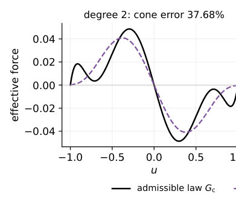
<figcaption class="paper-figure-caption"><b>Fig 1.</b> Figure 1: Approximation limit of the nonnegative cone for the admissible law Gc of Eq. (10). Left: Bernstein degree two; right: degree five. Solid line: Gc; dashed line: its best approximation with nonnegative Bernstein coefficients in L2(−1, 1). The panel titles give the relative L2 force error of that approximation (the approximation floor); the unconstrained space of each degree represents Gc exactly. No trajectory data are involved.</figcaption>
</figure>
<figure class="paper-figure-card">
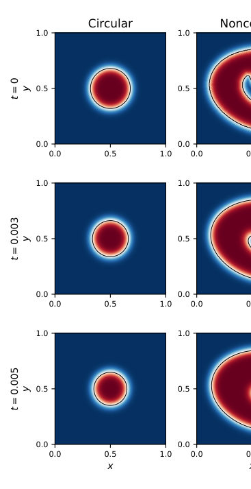
<figcaption class="paper-figure-caption"><b>Fig 2.</b> Figure 2: Sixth-degree-law observations on the separate 2562 dataset: circular, nonconvex, and inclusion geometries at the initial time, identification endpoint, and final time. Colors show u on a common scale and black contours mark u = 0. Contours use the cell-centred coordinates of the fields. These are the neural- comparison observations, not the 962 four-law principal ensemble.</figcaption>
</figure>
<figure class="paper-figure-card">
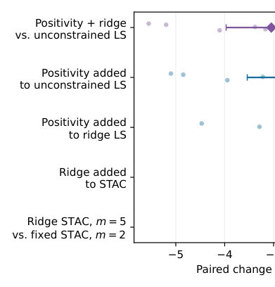
<figcaption class="paper-figure-caption"><b>Fig 3.</b> Figure 3: Paired changes in mean force error at degree five on the principal records, in percentage points. Negative values favor the first-named method. Di- amonds indicate means over ten seed clusters, dots show the individual cluster means, and bars show nominal 95% percentile bootstrap intervals. The final com- parison uses fixed degree-two STAC as the reference.</figcaption>
</figure>
<figure class="paper-figure-card">
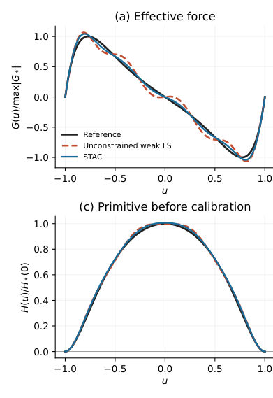
<figcaption class="paper-figure-caption"><b>Fig 4.</b> Figure 4: Degree-five recovery of the exponential law from circular observations at noise 0.03. The unconstrained estimate (dashed) and STAC (blue) use the same moments; black is the reference. Panels (a,b) show the force and an enlargement near the origin. Panels (c,d) show the primitive and its local change from u = 0. The additional force zeros and central local minimum identify an unintended metastable mixed state.</figcaption>
</figure>
<figure class="paper-figure-card">
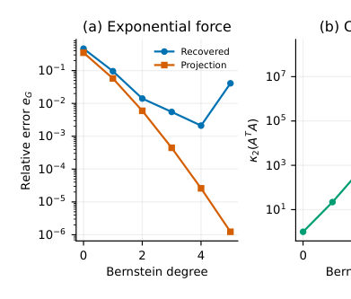
<figcaption class="paper-figure-caption"><b>Fig 5.</b> Figure 5: Supplementary clean-data tests. (a) Exponential-force recovery and best nonnegative approximation against Bernstein degree. (b) Condition number of the weak Gram matrix in the earlier normal-equation implementation used for these records. (c) Sixth-degree-law recovery under spatial refinement with a common initial field and 24 or 48 CNAB2 substeps. These calculations are separate from the principal QR/SVD comparisons.</figcaption>
</figure>
</div>

<p><strong>Summary.</strong> This paper addresses the ambiguity in determining the free-energy potential and length scale from phase-field dynamics governed by the Allen-Cahn equation. It introduces the STAC method, which uses an external surface-tension measurement to resolve this ambiguity. The technique proves robust by combining weak-form analysis with structural constraints, leading to accurate physical parameter recovery.</p>
<p><strong>Why it may be interesting.</strong> While focused on classical phase transitions, the mathematical framework of solving ill-posed inverse problems using structural constraints (like positivity or specific functional forms) is highly relevant to identifying unknown Hamiltonians or effective potentials in complex quantum many-body systems.</p>
<details>
<summary>Detailed structure</summary>
<p><strong>Main problem.</strong> The core challenge is the ill-posed inverse problem of recovering the underlying free-energy potential ($F$) and interfacial scale ($\varepsilon$) from phase-field observations governed by the Allen-Cahn equation.</p>
<p><strong>Main result.</strong> The proposed STAC method successfully recovers a structurally admissible and physically scaled potential by combining weak moment analysis with an independent surface-tension calibration, significantly improving accuracy over unconstrained methods.</p>
<p><strong>Method.</strong> STAC is a two-step process: first, solving a linear inverse problem using space-time weak moments and enforcing structure via a Bernstein representation; second, algebraically fixing the scale using an independently supplied surface tension ($\sigma$).</p>
<p><strong>Model / system.</strong> The system is described by phase-field trajectories governed by the Allen-Cahn equation, whose energy functional involves the free energy $F(u)$ and an interfacial scale $\varepsilon$. The dynamics are analyzed via weak formulations.</p>
<p><strong>Key observables.</strong> Effective force ($G = F'/\varepsilon^2$), surface tension ($\sigma$), and the phase field $u(x,t)$.</p>
<p><strong>Important parameters / regimes.</strong> The surface tension ($\sigma$) acts as the crucial independent calibration datum that resolves the inherent scale ambiguity in the dynamics.</p>
<p><strong>Assumptions / limitations.</strong> The method assumes the existence of a surface tension datum ($\sigma$) and relies on enforcing structural constraints (like positivity via Bernstein polynomials) to stabilize the ill-posed inverse problem.</p>
<p><strong>Figures summary.</strong> The notes mention comparing error metrics (e.g., mean force error reduction from 8.70% to 5.66%) and showing structural violations in unconstrained vs. constrained methods.</p>
<p><strong>Paper structure.</strong> The paper establishes the scale ambiguity of the Allen-Cahn model, introduces the STAC two-step method (weak moments $ o$ Bernstein constraint $   o$ $\sigma$ calibration), proves theoretical uniqueness, and validates the approach using extensive numerical experiments on noisy data.</p>
</details>
<details>
<summary>Abstract</summary>
<p>Phase-field trajectories governed by the Allen--Cahn equation determine the effective force $G=F'/\eps^2$, but not the free-energy potential $F$ and interfacial scale $\eps$ separately. We introduce surface-tension-calibrated Allen--Cahn identification (STAC), a two-step method that resolves this ambiguity using an independently supplied surface tension. First, space--time weak moments produce a linear inverse problem without differentiating the measured field. A Bernstein representation with positive coefficients enforces two stable pure phases and a single central energy maximum. Second, the surface tension fixes the remaining scale algebraically. We prove scale equivalence of the forward model, uniqueness of the calibrated pair within this class, and finite perturbation bounds that remain valid when the potential vanishes at the pure phases. Experiments with resolved synthetic phase fields separate the effects of the structural constraint, ridge regularization, and constitutive approximation error. Across 80 shared noisy records, unconstrained degree-five regression produces six potentials with an incorrect well structure. Positivity combined with ridge regularization eliminates these violations and reduces the mean force error from 8.70\% to 5.66\%. Lower-degree models are nevertheless more accurate in some tests, and an admissible law outside the positive Bernstein family shows how the constraint can introduce approximation bias. STAC thus recovers a structurally admissible, physically scaled potential while making explicit which information comes from the observed dynamics and which comes from the independent surface-tension datum.</p>
</details>
<p><sub><a href="#top">↑ back to top</a></sub></p>

<p><a id="paper-2609.18485"></a></p>
<h3 id="chiral-classical-and-quantum-acoustics-with-hole-spin-qubits"><a href="http://arxiv.org/abs/2609.18485v1">Chiral classical and quantum acoustics with hole-spin qubits</a></h3>
<p><strong>Authors:</strong> Zhanning Wang, Yongtao Li, Nelson E. Rivas, Gonzalo García, Irene Castro, Rubén Seoane Souto, Daniel Ramos, José C. Abadillo-Uriel<br>
<strong>Type:</strong> theory · <strong>Category:</strong> quantum information and computing · <strong>PDF:</strong> <a href="https://arxiv.org/pdf/2609.18485v1">https://arxiv.org/pdf/2609.18485v1</a><br>
<strong>Analysis basis:</strong> full PDF text, analyzed in chunks
<strong>Topic relevance:</strong> <code>analog quantum simulation</code> <strong>2/5</strong> · <code>Keldysh / 2PI / non-Gaussian methods</code> <strong>1/5</strong></p>
<div class="figure-strip-hint">↔ Scroll figures horizontally</div>
<div class="paper-figures-scroll">
<figure class="paper-figure-card">
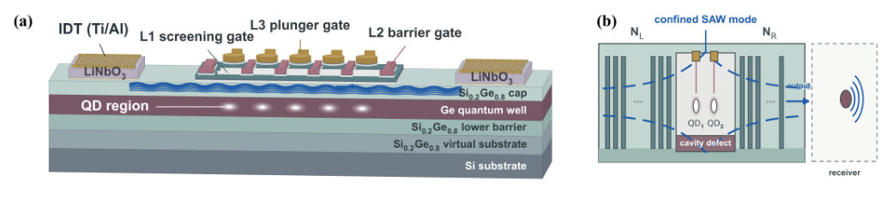
<figcaption class="paper-figure-caption"><b>Fig 1.</b> FIG. 1. (a) Schematic of a SAW traveling through a multidot device, comprising two LiNbO3-based IDTs with voltages VIDT integrated with a layered Si/SiGe/Ge heterostructure. In our simulations, quantum dots are defined within the Ge quantum well and controlled by a screening gate, six barrier gates and five plunger gates. The blue wavefronts indicate the SAW launched by the IDTs. (b) Schematic of a shared phononic-crystal (PnC) cavity containing two quantum dots within the central defect region. The two dots couple to the same confined SAW mode. The left and right mirrors contain NL and NR cells, respectively, with NL &gt; NR. They confine the mode and preferentially direct acoustic output...</figcaption>
</figure>
<figure class="paper-figure-card">
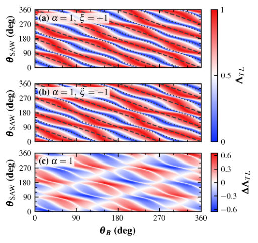
<figcaption class="paper-figure-caption"><b>Fig 2.</b> FIG. 2. Longitudinal/co-rotating-transverse composition of the acoustic g-matrix modulation for the two propagation branches. The color map shows the transverse-longitudinal mixing parameter ΛTL,ξ defined in Eq. (8). It is plotted as a function of the acoustic axis θSAW and the magnetic field angle θB. The calculation uses the 2 GHz FEM strain field for a circular quantum dot, α = 1. Panels (a) and (b) cor- respond to ξ = +1 and ξ = −1, respectively. The straight dashed and dotted grey lines in (a) and (b) are guides to the eye for this dominant fitted fourfold harmonic. The weaker harmonics produce the deviations of the numerical texture from these guides. (c) shows the branch difference...</figcaption>
</figure>
<figure class="paper-figure-card">
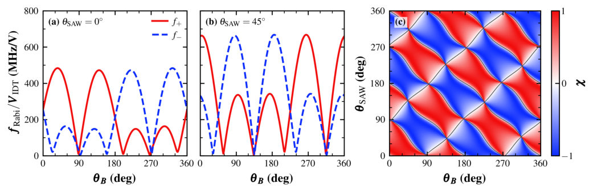
<figcaption class="paper-figure-caption"><b>Fig 3.</b> FIG. 3. FEM-derived directional transverse coupling and chirality. (a,b) Resonant Rabi frequencies f± ≡fT,ξ=±1 per applied IDT voltage versus θB at 2 GHz, using the directly calculated θSAW = 0◦FEM field and its rotated θSAW = 45◦counterpart, respectively. (c) Chirality χ = (f 2 + −f 2 −)/(f 2 + + f 2 −) of Eq. (7) as a function of θB and θSAW. Black contours denote χ = 0, that is, equal coupling of the two propagation directions, and not a vanishing absolute Rabi frequency.</figcaption>
</figure>
<figure class="paper-figure-card">
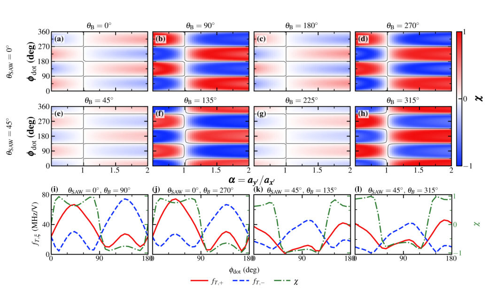
<figcaption class="paper-figure-caption"><b>Fig 4.</b> FIG. 4. FEM-calculated chirality and direction-resolved transverse coupling under electrostatic reshaping of the dot. (a-d) χ as a function of the fixed-area aspect ratio α = ay′/ax′ and dot orientation ϕdot, for θSAW = 0◦and θB = 0◦, 90◦, 180◦, and 270◦, respectively. (e-h) Corresponding maps for θSAW = 45◦and θB = 45◦, 135◦, 225◦, and 315◦. Red and blue denote positive and negative chirality, respectively, and the grey contours indicate χ = 0. (i-l) One-dimensional cuts at α = 2 through panels (b), (d), (f), and (h), respectively, showing fT,+ (red solid), fT,−(blue dashed), and χ (green dash-dotted) as ϕdot varies over one non-redundant 180◦period. The transverse rates are quoted per...</figcaption>
</figure>
<figure class="paper-figure-card">
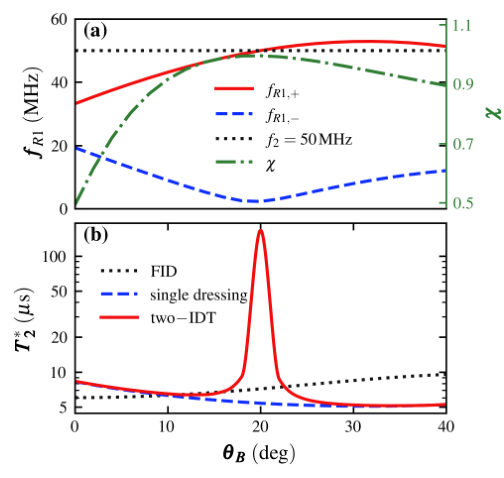
<figcaption class="paper-figure-caption"><b>Fig 5.</b> FIG. 5. Chirality-assisted bichromatic coherence protection. (a) Primary Rabi frequencies fR1,+ and fR1,−for the two reciprocal propagation branches, together with the chirality χ, as functions of θB. The horizontal reference fixes f2 = 50 MHz. The acoustic controls are calibrated only at θB = 20◦, where the bright-branch splitting satisfies fR1,+ = f2 while the reciprocal branch is nearly dark. (b) Coherence times T ∗ 2,m for bare free induction (m = 0), single dressing (m = 1), and bichromatic dressing (m = 2), evaluated with the same noise and relaxation model. Frequencies, powers, propagation directions, and acoustic geometry are held fixed throughout the angular scan.</figcaption>
</figure>
</div>

<p><strong>Summary.</strong> This paper theoretically models the interaction between hole-spin qubits and surface acoustic waves (SAWs) using a detailed Hamiltonian approach. It introduces the concept of 'spin-acoustic chirality' to quantify how the direction of the SAW affects the qubit's spin dynamics. The results show that this coupling is highly tunable via external electric and magnetic fields, offering a pathway for coherent quantum control using acoustic phonons.</p>
<p><strong>Why it may be interesting.</strong> This work provides a concrete, physically tunable mechanism for coupling solid-state qubits to acoustic phonons, which is crucial for developing scalable quantum memories and gates using phononics.</p>
<details>
<summary>Detailed structure</summary>
<p><strong>Main problem.</strong> The paper develops a unified description linking classical acoustic chirality to quantum anisotropy in hole-spin qubits driven by surface acoustic waves (SAWs). It aims to understand how counterpropagating SAWs differentially couple to the qubit spin.</p>
<p><strong>Main result.</strong> The coupling strength and directional chirality are tunable by electrostatic gating and magnetic field orientation, allowing for precise control over longitudinal versus transverse qubit driving components.</p>
<p><strong>Method.</strong> The authors combine a microscopic Luttinger-Kohn Hamiltonian with Bir-Pikus strain theory and 3D finite-element simulations to derive the acoustic g-matrix modulation.</p>
<p><strong>Model / system.</strong> The system involves gate-defined hole spins in a quantum well coupled to Rayleigh-type surface acoustic waves. The theoretical framework uses the LKBP model to describe strain-mediated coupling to the qubit's g-matrix.</p>
<p><strong>Key observables.</strong> Acoustic chirality ($\chi$), directional balance ($\Lambda_{TL,\xi}$), and the modulation of the qubit g-matrix components.</p>
<p><strong>Important parameters / regimes.</strong> Acoustic wave frequency (e.g., 2 GHz), magnetic field orientation ($    heta_B$), and SAW propagation angle ($   heta_{SAW}$).</p>
<p><strong>Assumptions / limitations.</strong> The derivation relies on projecting the full six-band LKBP Hamiltonian onto the lowest Zeeman-split doublet and uses leading-order approximations in HH-LH mixing.</p>
<p><strong>Figures summary.</strong> Figures schematically illustrate the SAW path through the device structure and the coupling of two quantum dots to a confined SAW mode.</p>
<p><strong>Paper structure.</strong> The paper progresses from defining the physical setup and the microscopic Hamiltonian (LKBP model) to deriving the strain-induced g-matrix modulation. It then quantizes this interaction, analyzing the resulting anisotropic Rabi coupling components, and finally discusses control mechanisms via gating and magnetic fields.</p>
</details>
<details>
<summary>Abstract</summary>
<p>Gate-defined hole spins combine strong spin-orbit coupling with exceptional strain sensitivity, making surface acoustic waves a natural route to remote, phase-coherent control. We show that counterpropagating surface acoustic waves can differ in coupling strength and in whether they predominantly drive spin rotations or modulate the qubit frequency. We call the transverse transition-strength imbalance spin-acoustic chirality and show that it is tunable through gate-controlled reshaping of the dot confinement. Combining a multiband Luttinger-Kohn Hamiltonian with the Bir-Pikus description of strain and 3D piezoelectric finite-element simulations, we obtain the acoustic g-matrix modulation governing coherent SAW driving. Quantizing the same strain-mediated interaction yields the corresponding single-phonon coupling, and a generalized anisotropic Rabi interaction with co-rotating, counter-rotating, and longitudinal components, linking classical chirality to quantum anisotropy and directional one-phonon emission. Magnetic field orientation and dot shape tune the acoustic chirality and operator selectivity. We illustrate this framework through bichromatic coherence protection and phonon-mediated heralded Bell-state initialization.</p>
</details>
<p><sub><a href="#top">↑ back to top</a></sub></p>

<p><a id="paper-2609.17707"></a></p>
<h3 id="conditions-for-the-emergence-of-spontaneous-phonon-frequency-combs-from-anharmonic-potentials"><a href="http://arxiv.org/abs/2609.17707v1">Conditions for the Emergence of Spontaneous Phonon Frequency Combs from Anharmonic Potentials</a></h3>
<p><strong>Authors:</strong> Jayakrishnan SS, Mayanak K Gupta, Dipanshu Bansal<br>
<strong>Type:</strong> theory · <strong>Category:</strong> other · <strong>PDF:</strong> <a href="https://arxiv.org/pdf/2609.17707v1">https://arxiv.org/pdf/2609.17707v1</a><br>
<strong>Analysis basis:</strong> full PDF text, analyzed in chunks
<strong>Topic relevance:</strong> <code>Keldysh / 2PI / non-Gaussian methods</code> <strong>1/5</strong> · <code>analog quantum simulation</code> <strong>1/5</strong> · <code>correlated / nonlocal dissipation</code> <strong>1/5</strong> · <code>driven-dissipative phase transition</code> <strong>1/5</strong> · <code>methods for driven-dissipative</code> <strong>1/5</strong> · <code>non-equilibrium universality</code> <strong>1/5</strong></p>
<div class="figure-strip-hint">↔ Scroll figures horizontally</div>
<div class="paper-figures-scroll">
<figure class="paper-figure-card">
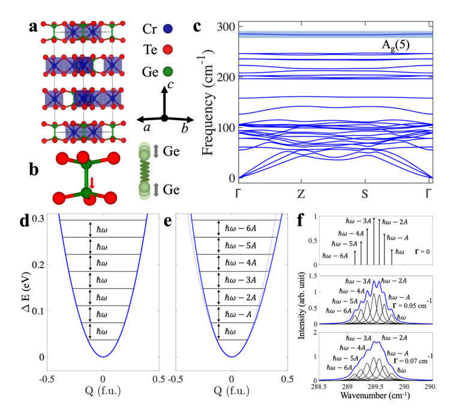
<figcaption class="paper-figure-caption"><b>Fig 1.</b> FIG. 1. (a) Crystal structure of CrGeTe3 showing CrTe6 octahedra in light blue. (b) The phonon</figcaption>
</figure>
<figure class="paper-figure-card">
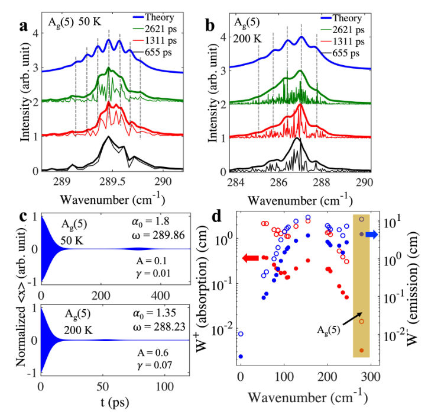
<figcaption class="paper-figure-caption"><b>Fig 2.</b> FIG. 2. (a) Comb-like features of the Ag(5) mode of CrGeTe3 as obtained by calculating SED from</figcaption>
</figure>
<figure class="paper-figure-card">
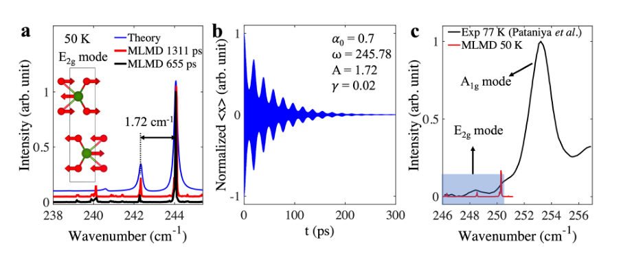
<figcaption class="paper-figure-caption"><b>Fig 3.</b> FIG. 3. (a) Frequency combs of the E2g mode of WSe2 as obtained by calculating SED of zone-</figcaption>
</figure>
<figure class="paper-figure-card">
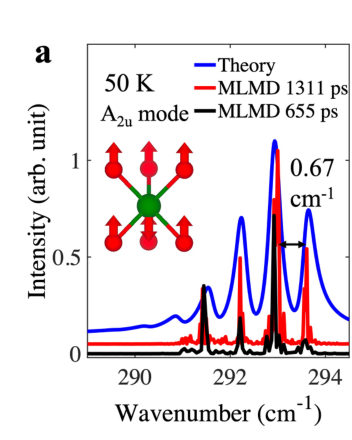
<figcaption class="paper-figure-caption"><b>Fig 4.</b> FIG. 4. (a,b) Same as Fig. 3(a,b) but for the A2u mode of WSe2.</figcaption>
</figure>
<figure class="paper-figure-card">
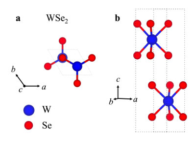
<figcaption class="paper-figure-caption"><b>Fig 5.</b> FIG. 5. (a,b) Crystal structure of WSe2 from different views. Blue and red denote W and Se</figcaption>
</figure>
</div>

<p><strong>Summary.</strong> This work explores the theoretical conditions required for phonons to spontaneously generate frequency combs in the THz regime, a phenomenon rarely observed. By simulating van der Waals solids like WSe2, the authors determined that strong anharmonicity from self-interaction and minimal phonon scattering are crucial for clear comb signatures. This provides a pathway for engineering stable, high-frequency vibrational energy sources.</p>
<p><strong>Why it may be interesting.</strong> The focus on anharmonic lattice dynamics and the engineering of coherent vibrational states connects to open quantum systems and quantum optics, particularly in understanding energy quantization in solid-state environments.</p>
<details>
<summary>Detailed structure</summary>
<p><strong>Main problem.</strong> The paper investigates the rare spontaneous formation of phonon frequency combs in the high-frequency GHz-THz regime, moving beyond experimentally observed nonlinear driving regimes.</p>
<p><strong>Main result.</strong> Spontaneous comb formation requires two key conditions: strong anharmonicity from intramolecular self-interaction and limited phonon scattering channels, which were demonstrated in WSe2.</p>
<p><strong>Method.</strong> The study employs machine-learning-augmented molecular dynamics simulations to calculate spectral energy density and analyze phonon scattering phase space.</p>
<p><strong>Model / system.</strong> The primary systems are van der Waals solids like CrGeTe3 and WSe2. The analysis models phonon interactions using anharmonic potentials and calculates scattering phase space integrals.</p>
<p><strong>Key observables.</strong> Phonon frequency combs (series of evenly spaced spectral lines), spectral energy density (SED), and anharmonicity ratios (k3/k2, k4/k2).</p>
<p><strong>Important parameters / regimes.</strong> Comb spacing ($\sim 0.1$ to $1.7 	ext{ cm}^{-1}$), phonon linewidth ($\Gamma$), and temperature (50 K to 200 K).</p>
<p><strong>Assumptions / limitations.</strong> The initial comb features observed in CrGeTe3 are attributed to isotopic mass distribution rather than true comb formation; the analysis relies on identifying conditions that overcome finite phonon linewidths.</p>
<p><strong>Figures summary.</strong> Figures illustrate crystal structures, mode vibrations, dispersion relations, and spectral broadening effects, comparing harmonic vs. anharmonic potentials.</p>
<p><strong>Paper structure.</strong> The paper first addresses the challenge of spontaneous comb formation, analyzing CrGeTe3's isotopic effects, then establishes the necessary physical conditions (anharmonicity and low scattering) using WSe2 as a model, and concludes with detailed calculations confirming comb formation in WSe2's E2g and A2u modes.</p>
</details>
<details>
<summary>Abstract</summary>
<p>Phononic frequency combs have been demonstrated experimentally and theoretically in the kHz-MHz regime under nonlinear driving; however, their spontaneous formation in the GHz-THz regime remains rare. We investigate the spontaneous formation of frequency combs in van der Waals solid CrGeTe$_3$, where combs of spacing $\sim$2 cm$^{-1}$ were experimentally proposed to occur in a flat phonon mode but are now reported to originate from isotopic distribution. Our spectral energy density calculations using machine-learning-augmented molecular dynamics simulations show comb-like features with reduced spacings of $\sim$0.1 and 0.6 cm$^{-1}$ in the same mode at 50 and 200 K. However, the spacings of the comb-like features are comparable to the phonon linewidth, making precise identification of the frequency comb challenging. From a comprehensive analysis of different modes of CrGeTe$_3$, we identified two conditions to distinctively observe the combs beyond the experimental resolution: (i) an intramolecular or isolated mode with reasonably large third- or higher-order anharmonicity from phonon self-interaction and (ii) limited phonon scattering channels. Our analysis of other van der Waals solids highlighted that these conditions are met for the nearly flat intramolecular $E_{2g}$ and $A_{2u}$ phonon modes of WSe$_2$. The detailed calculations showed the formation of a spontaneous frequency comb with spacings of 1.7 and 0.67 cm$^{-1}$ from coherent superposition of four and five-phonon eigenstates in the $E_{2g}$ and $A_{2u}$ phonon modes, respectively. Available Raman scattering data of the $E_{2g}$ mode in the literature provide preliminary, if not conclusive, evidence of comb formation. Our findings offer a deeper understanding and open avenues for engineering long-lived phononic frequency combs for various practical applications.</p>
</details>
<p><sub><a href="#top">↑ back to top</a></sub></p>

<p><a id="paper-2609.17990"></a></p>
<h3 id="experimental-assessment-of-the-wiedemann-franz-law-in-thin-metal-films-using-thermoreflectance-and-electrical-measurements"><a href="http://arxiv.org/abs/2609.17990v1">Experimental assessment of the Wiedemann-Franz law in thin metal films using thermoreflectance and electrical measurements</a></h3>
<p><strong>Authors:</strong> Zhiwei Deng, Jinlong Ma, Puqing Jiang<br>
<strong>Type:</strong> experiment · <strong>Category:</strong> other · <strong>PDF:</strong> <a href="https://arxiv.org/pdf/2609.17990v1">https://arxiv.org/pdf/2609.17990v1</a><br>
<strong>Analysis basis:</strong> full PDF text, analyzed in chunks
<strong>Topic relevance:</strong> <code>analog quantum simulation</code> <strong>1/5</strong> · <code>quantum measurements</code> <strong>1/5</strong></p>
<div class="figure-strip-hint">↔ Scroll figures horizontally</div>
<div class="paper-figures-scroll">
<figure class="paper-figure-card">
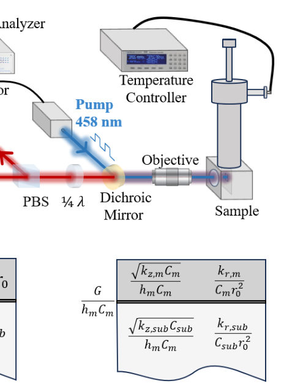
<figcaption class="paper-figure-caption"><b>Fig 1.</b> FIG. 1. (a) Schematic of the SPS experimental setup. (b) Two-layered sample structure with key parameters involved in thermal measurements.</figcaption>
</figure>
<figure class="paper-figure-card">
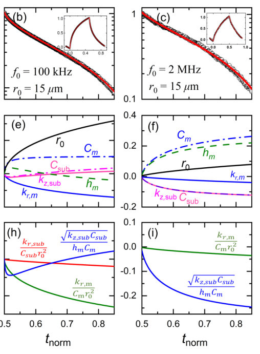
<figcaption class="paper-figure-caption"><b>Fig 2.</b> FIG. 2. Representative multi-frequency SPS measurement of the e-beam-evaporated Al film on fused silica. (a–c) Normalized periodic waveforms (symbols) and best fits (curves) at 2 kHz, 100 kHz, and 2 MHz (𝑟0 = 15.0 𝜇m). (d–f) Sensitivity coefficients for individual parameters corresponding to the three measurement conditions in (a)–(c). (g–i) Sensitivity coefficients for the combined parameters defined in Eq. (1) under the same conditions. The distinct frequency-dependent sensitivities allow simultaneous extraction of 𝑘𝑟,𝑠𝑢𝑏 (2 kHz), 𝑘𝑟,𝑚 (100 kHz), and 𝐶𝑚 (2 MHz).</figcaption>
</figure>
<figure class="paper-figure-card">

<figcaption class="paper-figure-caption"><b>Fig 3.</b> Figure 3(e) shows that the second dataset (the 500 kHz measurement with the</figcaption>
</figure>
<figure class="paper-figure-card">

<figcaption class="paper-figure-caption"><b>Fig 4.</b> FIG. 3. Representative multi-frequency SPS measurement of the magnetron-sputtered Ta film on fused silica. (a–c) Normalized periodic waveforms at 1 kHz, 500 kHz (𝑟0 = 14.4 𝜇m), and 24 kHz (𝑟0 = 7.2 𝜇m). (d–f) Sensitivity coefficients for individual parameters corresponding to the three measurement conditions in (a)–(c). (g–i) Sensitivity coefficients for the combined parameters defined in Eq. (1) under the same conditions. The 1 kHz data determine 𝑘𝑟,𝑠𝑢𝑏; the 500 kHz and 24 kHz data are jointly fitted under the isotropy assumption to extract 𝑘𝑚 and 𝐶𝑚.</figcaption>
</figure>
<figure class="paper-figure-card">

<figcaption class="paper-figure-caption"><b>Fig 5.</b> FIG. 6. Temperature-dependent transport properties of the magnetron-sputtered Ta film: (a) thermal conductivity 𝑘𝑚, (b) volumetric heat capacity 𝐶𝑚, (c) electrical resistivity 𝜌, and (d) apparent Lorenz number 𝐿app calculated using 𝜌meas(𝑇). Solid curves in (a), (b), and (c) represent bulk references42, 44, 47. The dashed curve in (a) shows the WF-based estimates calculated using 𝜌model(𝑇) = 𝜌bulk(𝑇) + 𝜌0, while the dashed curve in (c) corresponds to 𝜌model(𝑇) itself.</figcaption>
</figure>
</div>

<p><strong>Summary.</strong> This experimental work characterizes the thermal transport properties of thin metal films using combined thermoreflectance and electrical measurements. The authors find that the Wiedemann-Franz law, which relates thermal and electrical conductivity, breaks down significantly for highly disordered or resistive films compared to bulk predictions. The findings provide critical guidelines for accurately modeling heat transfer in microelectronic materials.</p>
<p><strong>Why it may be interesting.</strong> While focused on solid-state thermal physics, the rigorous comparison of transport coefficients and the identification of systematic deviations from a fundamental law like WF can inform models of energy dissipation in nanoscale electronic devices, which has relevance to open quantum systems modeling.</p>
<details>
<summary>Detailed structure</summary>
<p><strong>Main problem.</strong> The paper addresses the need for accurate thermal property determination in metal thin films, which is crucial for microelectronic thermal modeling and interpreting thermoreflectance measurements.</p>
<p><strong>Main result.</strong> The measured thermal conductivity ($k_m$) deviates significantly from estimates based on the Wiedemann-Franz law ($k_{WF}$), particularly for highly resistive films like sputtered Ta, demonstrating the law's limitations in these regimes.</p>
<p><strong>Method.</strong> The study combines Square-Pulsed Source (SPS) thermoreflectance measurements with independent van der Pauw electrical measurements to characterize thermal and electrical transport.</p>
<p><strong>Model / system.</strong> The physical system involves thin metal films (Al, Ti, Ta) deposited via various methods. The analysis compares direct measurements of thermal conductivity ($\kappa_m$) against estimates derived from the Wiedemann-Franz law, which relates thermal and electrical transport.</p>
<p><strong>Key observables.</strong> Measured thermal conductivity ($k_m$), volumetric heat capacity ($C_m$), apparent Lorenz number ($L_{app}$), and the comparison ratio $k_m / k_{WF,model}$.</p>
<p><strong>Important parameters / regimes.</strong> Temperature range (80 to 300 K), deposition method (thermal evaporation, e-beam, sputtering), and the Sommerfeld Lorenz number ($L_0$).</p>
<p><strong>Assumptions / limitations.</strong> The primary assumptions tested are the applicability of the bulk Wiedemann-Franz law and the model used for resistivity ($
ho_{model}(T)$).</p>
<p><strong>Figures summary.</strong> Not specified (Bibliography chunk provided, no figure descriptions).</p>
<p><strong>Paper structure.</strong> The paper introduces the problem of thermal characterization, details the combined SPS/van der Pauw measurement technique, compares the measured thermal properties against WF predictions, and concludes by providing practical guidance on the law's applicability.</p>
</details>
<details>
<summary>Abstract</summary>
<p>Accurate thermal properties of metal thin films are essential for microelectronic thermal modeling and for interpreting thermoreflectance measurements when signals are sensitive to film thermal transport. In practice, film thermal conductivity is commonly inferred from electrical resistivity via the Wiedemann-Franz (WF) law with the Sommerfeld-Lorenz number L_0, neglecting phonon contributions and microstructure-dependent scattering. Here, we combine square-pulsed source (SPS) thermoreflectance with van der Pauw measurements to characterize thermal and electrical transport in Al, Ti, and Ta thin films prepared by thermal evaporation, e-beam evaporation, and magnetron sputtering. SPS measurements from 80 to 300 K yield the film thermal conductivity k_m and volumetric heat capacity C_m, with C_m agreeing with bulk values within +/-8%. Compared with WF-based estimates using L_0 and a modeled resistivity, \r{ho}_model (T)=\r{ho}_bulk (T)+\r{ho}_0, k_m deviates by 5-20% for Al and Ti and up to 40% for sputtered Ta at 300 K. While the smaller deviations are comparable to experimental uncertainty, the large mismatch for Ta demonstrates the limitation of applying the bulk L_0 to highly resistive metal films. Apparent Lorenz numbers L_app=k_m \r{ho}_meas/T from 150 to 300 K further reveal that deposition-induced disorder, grain-boundary scattering, and possible phase-related effects can modify the correlation between heat and charge transport in thin metal films. These results clarify the applicability of the WF law to deposited metal thin films and offer practical guidance for thermal modeling and thermoreflectance analysis.</p>
</details>
<p><sub><a href="#top">↑ back to top</a></sub></p>

<p><a id="paper-2609.18340"></a></p>
<h3 id="tuneable-terahertz-transitions-in-zigzag-graphene-nanoribbons"><a href="http://arxiv.org/abs/2609.18340v1">Tuneable terahertz transitions in zigzag graphene nanoribbons</a></h3>
<p><strong>Authors:</strong> R. R. Hartmann, M. E. Portnoi<br>
<strong>Type:</strong> theory · <strong>Category:</strong> other · <strong>PDF:</strong> <a href="https://arxiv.org/pdf/2609.18340v1">https://arxiv.org/pdf/2609.18340v1</a><br>
<strong>Analysis basis:</strong> full PDF text, analyzed in chunks
<strong>Topic relevance:</strong> <code>analog quantum simulation</code> <strong>1/5</strong> · <code>interference shaping light</code> <strong>1/5</strong></p>
<div class="figure-strip-hint">↔ Scroll figures horizontally</div>
<div class="paper-figures-scroll">
<figure class="paper-figure-card">

<figcaption class="paper-figure-caption"><b>Fig 1.</b> FIG. 1. (a) The atomic structure of a zigzag graphene nanoribbon, N atoms wide, is shown. Such a nanoribbon is commonly referred to as a (N/2)-ZGNR, where N/2 is the number of zigzag carbon chains across the ribbon’s width. The carbon atoms in the unit cell are numbered, and the primitive lattice vectors of graphene, a1 and a2, are indi- cated, together with the two inequivalent atoms belonging to the A and B sublattices that form the honeycomb lattice. (b) Schematic of the experimental geometry used to apply an in-plane electric field transverse to the nanoribbon axis.</figcaption>
</figure>
<figure class="paper-figure-card">

<figcaption class="paper-figure-caption"><b>Fig 2.</b> FIG. 3. Edge-state gap εg as a function of the transverse electric-field strength. The numerical results are shown in gold. From top to bottom, the black curves correspond to the 20-ZGNR (long-dashed), 10-ZGNR (solid), and 2-ZGNR (short-dashed). The results for the 10- and 20-ZGNRs are obtained from the analytical dispersion in Eq. (2), while the exact analytical result for the 2-ZGNR is derived in End Mat- ter, Appendix B.</figcaption>
</figure>
<figure class="paper-figure-card">

<figcaption class="paper-figure-caption"><b>Fig 3.</b> FIG. 2. (a) Energy spectrum of a 20-ZGNR in the absence (dashed black curve) and presence (solid black curve) of a transverse electric field of strength 106 V m−1. (b) Enlarged view of the positive-energy region, showing the spectra of 2- , 10-, and 20-ZGNRs under the same applied field, together with the zero-field spectrum of the 20-ZGNR for reference. For the 10- and 20-ZGNRs, the numerical results (solid and dash-dotted black curves) are compared with the analytical dispersion given by Eq. (2) (gold curves). The 2-ZGNR spec- trum is obtained from the exact analytical result derived in End Matter, Appendix B (dark-blue curve).</figcaption>
</figure>
<figure class="paper-figure-card">

<figcaption class="paper-figure-caption"><b>Fig 4.</b> FIG. 4. Optical matrix elements for transitions across the edge-state gap in a 20-ZGNR as functions of the longitudinal wavevector ky. The red and blue curves show |⟨x⟩|/a and |⟨y⟩|/a, respectively, where |⟨x⟩| = |⟨ψf|ˆx|ψi⟩| and |⟨y⟩| = |⟨ψf|ˆvy|ψi⟩|/ω. These correspond to light polarized transverse and parallel to the ribbon axis, respectively, with ℏω = εf −εi. The open circles show the results obtained from the analytical expressions and are plotted over the range in which the states remain edge-localized. The grey dashed line shows the shifted energy spectrum, allowing one to identify the values of ky corresponding to the strongest transitions.</figcaption>
</figure>
<figure class="paper-figure-card">

<figcaption class="paper-figure-caption"><b>Fig 5.</b> FIG. 5. Normalized Stokes parameter s1 for linearly polarized excitation as a function of the longitudinal wavevector ky. The leftmost blue, middle grey, and rightmost dashed black curves correspond to the 2-, 10-, and 20-ZGNRs, respectively. The limits s1 = 1 and s1 = −1 correspond to purely x- and y-polarized transitions, respectively. The transverse electric- field strength is 1 MV m−1.</figcaption>
</figure>
</div>

<p><strong>Summary.</strong> This theoretical study demonstrates that applying a transverse electric field to zigzag graphene nanoribbons opens a tunable band gap in the THz range. This field breaks symmetry, enabling polarization-selective optical transitions. The resulting phenomena, including a circular photogalvanic response, suggest zGNRs are promising platforms for compact, tunable THz emitters.</p>
<p><strong>Why it may be interesting.</strong> The strong dependence of optical selection rules on external fields and the resulting tunable THz emission mechanism make this highly relevant for quantum optics and open quantum systems research.</p>
<details>
<summary>Detailed structure</summary>
<p><strong>Main problem.</strong> The paper investigates how applying a transverse electric field to zigzag graphene nanoribbons (zGNRs) can open a tunable band gap in the terahertz (THz) range, enabling novel optical transitions.</p>
<p><strong>Main result.</strong> The electric field breaks the ribbon's reflection symmetry, leading to a gap that scales linearly with the field strength. This allows for tunable THz emission and the generation of a circular photogalvanic response.</p>
<p><strong>Method.</strong> The analysis uses a nearest-neighbour $\pi$-orbital tight-binding model solved via the transfer-matrix method and perturbation theory to calculate optical transition matrix elements.</p>
<p><strong>Model / system.</strong> The system is a zigzag graphene nanoribbon (zGNR) modeled by a tight-binding Hamiltonian. The effect of the transverse electric field is introduced as a symmetry-breaking perturbation.</p>
<p><strong>Key observables.</strong> Tunable band gap ($\epsilon_g$), polarization anisotropy ($s_1$), and helicity-resolved transition strengths.</p>
<p><strong>Important parameters / regimes.</strong> Transverse electric field strength ($E$), excitation frequency ($\omega$), and ribbon width ($N$).</p>
<p><strong>Assumptions / limitations.</strong> The analysis relies on the nearest-neighbour $\pi$-orbital tight-binding model and uses approximations for large $N$ and specific limits for perturbation theory.</p>
<p><strong>Figures summary.</strong> Figures illustrate the opening of the gap ($\epsilon_g$ vs. $E$), the polarization anisotropy ($s_1$ vs. $k_y$), and the selective excitation of carriers using circularly polarized light.</p>
<p><strong>Paper structure.</strong> The paper progresses from establishing the gap opening due to symmetry breaking, to analyzing polarization anisotropy, and finally demonstrating the helicity selectivity leading to a circular photogalvanic response for THz emission.</p>
</details>
<details>
<summary>Abstract</summary>
<p>We show that a transverse electric field applied to a zigzag graphene nanoribbon opens a band gap whose energy can be tuned through the terahertz (THz) range. The field breaks the reflection symmetry of the ribbon, allowing optical transitions that are forbidden in its absence. The relative strengths of transitions polarized parallel and transverse to the ribbon depend strongly on excitation frequency and become equal at a particular frequency. At this frequency, each helicity selectively excites carriers in only one of the two field-induced edge-state valleys, with the selected valley reversed for the opposite helicity. Since this excitation occurs away from the valley minima, the photoexcited carriers have finite group velocity, giving rise to a circular photogalvanic response. Van Hove singularities enhance radiative recombination at the band edge, providing a route towards compact, tunable THz emitters.</p>
</details>
<p><sub><a href="#top">↑ back to top</a></sub></p>

<p><a id="paper-2609.18170"></a></p>
<h3 id="two-parameter-family-of-nonlinear-dirac-equations-with-scalar-scalar-plus-vector-vector-interactions"><a href="http://arxiv.org/abs/2609.18170v1">Two-Parameter Family of Nonlinear Dirac Equations With Scalar-Scalar plus Vector-Vector Interactions</a></h3>
<p><strong>Authors:</strong> Avinash Khare, Fred Cooper, John F. Dawson, Avadh Saxena<br>
<strong>Type:</strong> theory · <strong>Category:</strong> other · <strong>PDF:</strong> <a href="https://arxiv.org/pdf/2609.18170v1">https://arxiv.org/pdf/2609.18170v1</a><br>
<strong>Analysis basis:</strong> full PDF text, analyzed in chunks
<strong>Topic relevance:</strong> <code>Keldysh / 2PI / non-Gaussian methods</code> <strong>1/5</strong> · <code>analog quantum simulation</code> <strong>1/5</strong></p>
<div class="figure-strip-hint">↔ Scroll figures horizontally</div>
<div class="paper-figures-scroll">
<figure class="paper-figure-card">

<figcaption class="paper-figure-caption"><b>Fig 1.</b> FIG. 1. Plot of the charge density ρ(x, ω0) for κ = 1, p = 3, and ω0 = 1/3 .</figcaption>
</figure>
<figure class="paper-figure-card">

<figcaption class="paper-figure-caption"><b>Fig 2.</b> FIG. 2. Plot of the charge density ρ(x, ω) for κ = 1 and p = 3.</figcaption>
</figure>
<figure class="paper-figure-card">

<figcaption class="paper-figure-caption"><b>Fig 3.</b> FIG. 3. Plot of the charge density ρ(x, ω) for κ = 5 and p = 3.</figcaption>
</figure>
<figure class="paper-figure-card">

<figcaption class="paper-figure-caption"><b>Fig 4.</b> FIG. 4. Plot of the charge density ρ(x, ω) for κ = 1 and p = 3/4.</figcaption>
</figure>
<figure class="paper-figure-card">

<figcaption class="paper-figure-caption"><b>Fig 5.</b> FIG. 5. Plot of E/Q (κ = 1, ω, p) for p = 1/5 (red), p = 1 (blue), and p = 5 (green).</figcaption>
</figure>
</div>

<p><strong>Summary.</strong> This theoretical paper derives exact solitary wave solutions for a nonlinear Dirac equation featuring combined scalar-scalar and vector-vector interactions. Key findings include the independence of the energy-to-charge ratio from the coupling strength and a detailed analysis of how the wave profile transitions between single and double humps based on system parameters. The work concludes by examining the stability of these solutions in the non-relativistic limit.</p>
<p><strong>Why it may be interesting.</strong> The study of nonlinear wave equations, particularly those derived from Dirac equations, is fundamental in quantum field theory and condensed matter physics, providing insights into stable localized structures (solitons).</p>
<details>
<summary>Detailed structure</summary>
<p><strong>Main problem.</strong> The paper aims to find exact solutions for a two-parameter family of nonlinear Dirac equations incorporating both scalar-scalar (SS) and vector-vector (VV) interactions.</p>
<p><strong>Main result.</strong> The ratio of energy to charge ($E/Q$) for the solitary wave solutions is found to be independent of the coupling constant $g$, and the existence of bound states is analyzed based on this ratio.</p>
<p><strong>Method.</strong> The methodology involves seeking stationary solitary wave solutions ($\psi(x,t) = e^{-i\omega t} \psi(x)$) and analyzing the resulting conserved quantities (Energy $E$ and Charge $Q$).</p>
<p><strong>Model / system.</strong> The model is a Nonlinear Dirac Equation (NLDE) with an interaction Lagrangian $L_I$ containing terms proportional to $(ar{\psi}\psi)^{\kappa+1}$ (SS) and $(ar{\psi}\gamma_\mu\psi ar{\psi}\gamma_\mu\psi)^{\kappa+1}$ (VV).</p>
<p><strong>Key observables.</strong> Charge ($Q$), Energy ($E$), and the ratio $E/Q$, which determines the existence of bound states ($E/Q < m$).</p>
<p><strong>Important parameters / regimes.</strong> The nonlinearity parameter $\kappa$, the interaction parameter $p$, the frequency $\omega$, and the mass $m$.</p>
<p><strong>Assumptions / limitations.</strong> The analysis assumes the existence of stationary solutions of the form $\psi(x, t) = e^{-i\omega t} \psi(x)$, and later, a non-relativistic approximation is used for stability analysis.</p>
<p><strong>Figures summary.</strong> Figures illustrate the transition between double and single hump solitary wave profiles based on $\kappa p$, and plot the $E/Q$ ratio versus $\omega$ for various parameter choices.</p>
<p><strong>Paper structure.</strong> The paper follows a structure of deriving the solutions, analyzing their properties (including $E/Q$ and hump shape), and concluding with a non-relativistic reduction to a modified NLSE to discuss stability.</p>
</details>
<details>
<summary>Abstract</summary>
<p>We obtain exact solutions of the nonlinear Dirac equation in $1+1$ dimensions of the form $ψ(x,t) = e^{-iωt} ψ(x)$ for scalar-scalar (SS) plus vector-vector (VV) interaction with interaction Lagrangian given by $$L_{I} = \frac{g^2}{κ+1}[(\barψ ψ)^{κ+1} +\frac{1}{p} (\barψ γ_μψ\barψ γ^μ ψ)^{κ+1}]$$ where $p > 0$ but arbitrary otherwise. We look for solutions with $0 < ω< m$ where $ω, m$ are frequency and mass, respectively. We find solutions for all values of $ω$ in this range. We compute the charge $Q$ and the energy $E$ for each of the solitary wave solutions and explore the region in the ($p, κ$) parameter space in which solitary wave bound states exist (i.e., for which $E/Q < m$). We show that for all the cases while both $E$ and $Q$ depend on the coupling constant $g$, their ratio $E/Q$ is independent of $g$. We further find that in case $pκ\le 1$, the charge density for all the solitary waves have only single hump while for $p κ> 1$ there is a transition from double to single hump and we determine it as a function of $ω/m$. We notice that for all $p$ there is a transition at $κ=2$ in the behavior of $E/Q$ as a function of $ω$ which we speculate is related to the onset of instability of the solutions at $κ=2$. We obtain the nonrelativistic reduction of the two-parameter family to a non-relativistic modified nonlinear Schrödinger equation (NLSE) and discuss the stability of the single hump olitary waves in the domain of validity of the modified NLSE.</p>
</details>
<p><sub><a href="#top">↑ back to top</a></sub></p>
<h3 id="other-secondary-papers-6">Other secondary papers (6)</h3>
<details>
<summary>Show other secondary papers</summary>

<p><a id="paper-2609.18398"></a></p>
<h3 id="altermagnetic-magnons-in-dipolar-nanomagnet-arrays"><a href="http://arxiv.org/abs/2609.18398v1">Altermagnetic Magnons in Dipolar Nanomagnet Arrays</a></h3>
<p><strong>Authors:</strong> Rhea Hoyer, Ephraim Spindler, Lukas Körber, Tobias Wagner, Mathias Weiler, Alexander Mook<br>
<strong>Type:</strong> theory · <strong>Category:</strong> other · <strong>PDF:</strong> <a href="https://arxiv.org/pdf/2609.18398v1">https://arxiv.org/pdf/2609.18398v1</a><br>
<strong>Analysis basis:</strong> full PDF text, analyzed in chunks</p>
<div class="figure-strip-hint">↔ Scroll figures horizontally</div>
<div class="paper-figures-scroll">
<figure class="paper-figure-card">

<figcaption class="paper-figure-caption"><b>Fig 1.</b> Figure 1. (a) Antiferromagnetic nanomagnet array of circular is- lands with lattice vectors a1 and a2. (b) Magnon dispersion along a high-symmetry path; inset shows the first BZ with dashed diagonal lines marking compensating mirror symmetries. Parameters deviat- ing from Table I (End Matter) are h1 = h2 and a = 6.0 × 10−8 m.</figcaption>
</figure>
<figure class="paper-figure-card">

<figcaption class="paper-figure-caption"><b>Fig 2.</b> Figure 2. (a) Altermagnetic nanomagnet array of elliptical islands and lattice vectors a1 and a2. (b) Magnon dispersion along a high- symmetry path; inset shows the first BZ with dashed diagonal lines marking compensating mirror symmetries. Color represents the spin expectation value in z direction. (c) Spin expectation value for upper and lower energy magnon bands projected onto a plane with contour lines of |⟨mz⟩| = 1 in white; inset shows more detail for the upper band at X. Parameters in Table I (End Matter).</figcaption>
</figure>
<figure class="paper-figure-card">

<figcaption class="paper-figure-caption"><b>Fig 3.</b> Figure 3. (a) Altermagnetic nanomagnet array of elliptical islands with lattice vectors a1 = a (1, −1) and a2 = a (1, 1). (b) Magnon dispersion along a high-symmetry path; inset shows the first BZ with dashed diagonal lines marking compensating mirror symme- tries. Color represents the spin expectation value in z direction. (c) Spin expectation value for upper and lower energy magnon bands projected onto a plane. The from Table I differing parameter reads a = 8.5 × 10−8 m.</figcaption>
</figure>
<figure class="paper-figure-card">

<figcaption class="paper-figure-caption"><b>Fig 4.</b> Figure 4. Micromagnetic simulations of the synthetic altermagnetic magnon spin splitting at the BZ boundary. Spatial maps of the dynamic magnetization amplitude |mx| in zero magnetic field for (a) the f↑= 6.735 GHz mode localized on the vertical islands and (b) the f↓= 6.759 GHz mode localized on the horizontal islands. (c–f) Field dependence for the scaled Bi:YIG lattice: (c, e) color-coded FFT amplitude spectra as a function of the out-of-plane field µ0Hz for two conjugate antiferromagnetic configurations (see insets) and (d, f) the corresponding linear evolution of the frequency splitting f↓−f↑crossing zero near 0.4 mT. (g–j) Equivalent results for the optimized parameter set (10 × Ms,...</figcaption>
</figure>
</div>
<p><strong>Summary.</strong> This paper theoretically investigates altermagnetism in nanomagnet arrays coupled by dipolar interactions, bypassing the need for spin-conserving symmetries. By modeling the system using macrospin theory and analyzing the resulting magnon bands, the authors show that characteristic d-wave spin polarization can be robustly generated. This establishes a tunable platform for anisotropic magnon transport in synthetic magnetic structures.</p>
<p><strong>Why it may be interesting.</strong> The work provides a theoretical framework for engineering exotic magnetic functionalities (altermagnetism) in artificial lattices using only long-range dipolar interactions, which is highly relevant for designing novel quantum magnetic materials.</p>
<details>
<summary>Detailed structure</summary>
<p><strong>Main problem.</strong> To determine if the defining signatures of altermagnetism persist in nanomagnet arrays coupled only by dipolar interactions, despite the intrinsic breaking of spin conservation.</p>
<p><strong>Main result.</strong> The study demonstrates that dipolar nanomagnet arrays can exhibit characteristic d-wave spin polarization and spin-split magnon bands, establishing a mesoscopic realization of altermagnetic magnons beyond conventional spin-conserving models.</p>
<p><strong>Method.</strong> The analysis employs macrospin theory, Holstein-Primakoff transformation, and Bogoliubov transformations to diagonalize the magnon Hamiltonian, supplemented by micromagnetic simulations for validation.</p>
<p><strong>Model / system.</strong> The system is a dipolar-coupled ferromagnetic nanoisland array, modeled using a total magnetic energy Hamiltonian involving exchange, anisotropy, and dipolar interactions. The analysis focuses on the resulting magnon spectrum and spin expectation values.</p>
<p><strong>Key observables.</strong> Magnon spin expectation value ($\langle m_{\alpha,z} 
angle$), spin-split magnon bands, and the characteristic d-wave pattern in the Brillouin zone.</p>
<p><strong>Important parameters / regimes.</strong> Dipolar coupling strength, perpendicular magnetic anisotropy ($K$), and the geometry of the nanoislands (e.g., elliptical vs. circular).</p>
<p><strong>Assumptions / limitations.</strong> The analysis relies on macrospin theory approximations and specific symmetry elements (e.g., inversion, glide-mirror) to analyze degeneracies and vanishing expectation values.</p>
<p><strong>Figures summary.</strong> Figures illustrate the magnon dispersion splitting in both circular and elliptical island arrays, and show the resulting d-wave spin polarization pattern across the Brillouin zone.</p>
<p><strong>Paper structure.</strong> The paper systematically analyzes the Hamiltonian using macrospin theory, derives the magnon spectrum, and then uses symmetry analysis (including lattice momentum sums and Bogoliubov transformations) to prove the existence and nature of the altermagnetic spin polarization.</p>
</details>
<details>
<summary>Abstract</summary>
<p>Altermagnetism is conventionally understood in a spin-conserving framework, where symmetry-enforced momentum-dependent spin splitting emerges in collinear magnets with vanishing net magnetization. Here, we show that its defining signatures persist in nanomagnet arrays coupled exclusively by dipolar interactions, despite the intrinsic breaking of spin conservation. Using a macrospin theory of dipolar-coupled ferromagnetic nanoislands, corroborated by micromagnetic simulations, we demonstrate that arrays engineered with altermagnetic symmetries exhibit spin-split magnon bands whose eigenstates can partially remain strongly spin polarized. The resulting spin expectation value displays the characteristic $d$-wave pattern throughout the Brillouin zone, establishing a mesoscopic realization of altermagnetic magnons beyond the conventional spin-conserving paradigm. As a consequence, spin-wave propagation becomes strongly direction dependent, providing a highly tunable platform for anisotropic magnon transport and synthetic altermagnetic functionality.</p>
</details>
<p><sub><a href="#top">↑ back to top</a></sub></p>

<p><a id="paper-2609.18189"></a></p>
<h3 id="chern-insulators-on-a-twisted-klein-bottle"><a href="http://arxiv.org/abs/2609.18189v1">Chern Insulators on a Twisted Klein Bottle</a></h3>
<p><strong>Authors:</strong> Rong Xiao, Y. X. Zhao<br>
<strong>Type:</strong> theory · <strong>Category:</strong> other · <strong>PDF:</strong> <a href="https://arxiv.org/pdf/2609.18189v1">https://arxiv.org/pdf/2609.18189v1</a><br>
<strong>Analysis basis:</strong> full PDF text, analyzed in chunks</p>
<div class="figure-strip-hint">↔ Scroll figures horizontally</div>
<div class="paper-figures-scroll">
<figure class="paper-figure-card">

<figcaption class="paper-figure-caption"><b>Fig 1.</b> FIG. 1. Momentum space representation of the symmetry and twisted Brillouin Klein bottle. a The valence and conduction Brillouin zones and the corresponding fundamental domains K±. b Cut the valence and conduction Klein bottles into cylinders and edge gluing rules specified by the twisting. c The torus resulting from gluing edges with the same color along the indicated directions. d Schematic illustration of edge spectra of the system in a slab geometry with C = 2. States on the left/right boundary are marked in blue/red color.</figcaption>
</figure>
<figure class="paper-figure-card">

<figcaption class="paper-figure-caption"><b>Fig 2.</b> FIG. 2. Even Chern number and unconventional chi- ral edge states. a Schematic of the tight-binding model on the two-dimensional SHO lattice. The SHO lattice bonds are shown in blue, the imaginary hopping perturbations are shown in red, and ±m denote the on-site potentials. b Cross sections of the band structure at ky = 0 and ky = π, illustrat- ing the screw-rotation symmetry in energy–momentum space. c Berry-phase flow γ−(ky). d Energy spectrum of the model in a slab geometry. The chiral states localized at the two boundaries are shown in red and blue, respectively.</figcaption>
</figure>
</div>
<p><strong>Summary.</strong> This work introduces momentum-space nonsymmorphic chiral symmetry as a novel organizing principle for topological materials. By analyzing systems on twisted manifolds like the Klein bottle, the authors show that this symmetry allows for the existence of nonzero Chern numbers, which are constrained to be even integers. This provides a new theoretical framework for engineering topological phases and predicting robust edge states.</p>
<p><strong>Why it may be interesting.</strong> The concept of momentum-space nonsymmorphic chiral symmetry provides a powerful, symmetry-based tool to predict and classify topological phases in condensed matter systems, extending beyond standard crystalline symmetries.</p>
<details>
<summary>Detailed structure</summary>
<p><strong>Main problem.</strong> To establish momentum-space nonsymmorphic chiral symmetry as a new organizing principle for discovering and engineering topological phases beyond conventional crystalline classifications.</p>
<p><strong>Main result.</strong> The presence of a twisted Klein bottle manifold, arising from chiral glide reflection, allows for nonzero Chern numbers, unlike the untwisted case, and this symmetry constrains the total Chern number to be an even integer.</p>
<p><strong>Method.</strong> The analysis uses topological classification via twisted K-groups and computes the Chern number using flux integrals over the Brillouin torus.</p>
<p><strong>Model / system.</strong> The study analyzes bipartite lattices exhibiting momentum-space nonsymmorphic symmetries, specifically chiral glide reflection and chiral twofold screw rotation, which are realized through the interplay of crystalline and sublattice symmetries.</p>
<p><strong>Key observables.</strong> Nonzero, even Chern numbers ($C_K$), and chiral edge states exhibiting a glide-reflection structure in energy-momentum space.</p>
<p><strong>Important parameters / regimes.</strong> The symmetry operators anticommute with the Hamiltonian, and the topological invariant depends critically on the twisting $ au \in H^1(M, \mathbb{Z}_2)$.</p>
<p><strong>Assumptions / limitations.</strong> The mechanism is limited to producing factor systems valued in $\{\pm 1\}$, restricting the achievable screw rotation to a twofold rotation.</p>
<p><strong>Figures summary.</strong> Figure 1 illustrates the momentum space reduction to a Klein bottle/dicosm and the edge gluing rules. Figure 2 shows the band structure for an SHO lattice model, detailing Berry-phase flow and edge states.</p>
<p><strong>Paper structure.</strong> The paper introduces the concept of momentum-space nonsymmorphic chiral symmetry, derives the symmetry operators for specific lattices, calculates the topological invariant using twisted K-theory, and applies this framework to specific models (2D and 3D) to demonstrate nontrivial topology.</p>
</details>
<details>
<summary>Abstract</summary>
<p>Recently, momentum-space nonsymmorphic symmetries have attracted considerable attention. However, their realizations typically rely on fine-tuning hopping phases to satisfy the required projective symmetry algebras. Here, we show that such symmetry algebras arise naturally on bipartite lattices through the interplay of crystalline and sublattice symmetries. Unlike previously studied cases, these symmetry operators can anticommute with the Hamiltonian and are therefore referred to as momentum-space nonsymmorphic chiral symmetries. Although the free actions of these symmetries reduce the Brillouin torus to more elementary manifolds, the resulting manifolds are twisted in the Atiyah--Segal formalism. In particular, chiral glide reflection (screw rotation) gives rise to a twisted Klein bottle (dicosm) in two (three) dimensions, and this twisting dramatically alters the topological classification. Unlike the untwisted Klein bottle, whose nonorientability forces the Chern number to vanish, the twisted Klein bottle can host nonzero Chern numbers, corresponding to even Chern numbers on the torus. At open boundaries, the corresponding topological invariant manifests itself through chiral edge states exhibiting a glide-reflection structure in energy--momentum space. Our results establish momentum-space nonsymmorphic chiral symmetry as a new organizing principle for discovering and engineering topological phases beyond conventional crystalline classifications.</p>
</details>
<p><sub><a href="#top">↑ back to top</a></sub></p>

<p><a id="paper-2609.18008"></a></p>
<h3 id="high-performance-orbital-torque-magnetic-memory-on-the-300-mm-platform"><a href="http://arxiv.org/abs/2609.18008v1">High-performance orbital-torque magnetic memory on the 300-mm platform</a></h3>
<p><strong>Authors:</strong> Dinggui Zeng, Yang Gao, Jinyu Duan, Lei Zhao, Yuhao An, Xing He, Jintao Ke, Yonglong Ga, Shasha Wang, Zhenghui Ji, Muyuan Chen, Hengan Zhou, Xuejie Xie, Enlong Liu, Junlu Gong, Qijun Guo, Yihui Sun, Zejie Zheng, Weiming He, Xiaolei Yang, Fantao Meng, Yaohua Wang, Hongxin Yang, Delin Zhang, Yong Jiang, Wanjun Jiang, Shikun He<br>
<strong>Type:</strong> both · <strong>Category:</strong> other · <strong>PDF:</strong> <a href="https://arxiv.org/pdf/2609.18008v1">https://arxiv.org/pdf/2609.18008v1</a><br>
<strong>Analysis basis:</strong> full PDF text, analyzed in chunks</p>
<div class="figure-strip-hint">↔ Scroll figures horizontally</div>
<div class="paper-figures-scroll">
<figure class="paper-figure-card">

<figcaption class="paper-figure-caption"><b>Fig 1.</b> Figure 1a illustrates the optimized pMTJ stack, in which a Ti/W bilayer serves as the orbital-</figcaption>
</figure>
<figure class="paper-figure-card">

<figcaption class="paper-figure-caption"><b>Fig 2.</b> Fig. 1d and Data Table 1). Boron removal from CoFeB facilitates the crystallization of the CoFe</figcaption>
</figure>
<figure class="paper-figure-card">

<figcaption class="paper-figure-caption"><b>Fig 3.</b> Fig. 1 | Multilayer stacks with optimized TMR and OT efficiency. a Schematic of the Ti/W-</figcaption>
</figure>
<figure class="paper-figure-card">

<figcaption class="paper-figure-caption"><b>Fig 4.</b> Fig. 2c). These results support that the charge current in Ti layer generates predominantly orbital</figcaption>
</figure>
<figure class="paper-figure-card">

<figcaption class="paper-figure-caption"><b>Fig 5.</b> Fig. 2d) and spin Hall conductivity 𝜎ௌுா ~ 748 (ħ/e)(S/cm), which could further promote the</figcaption>
</figure>
</div>
<p><strong>Summary.</strong> This work presents a high-performance magnetic memory utilizing orbital-torque (OT) effects in a Ti/W bilayer structure on a large-scale 300-mm wafer. By leveraging the orbital angular momentum, the authors achieved ultra-low write energy and high TMR, offering a practical pathway for next-generation, energy-efficient memory for AI and high-performance computing.</p>
<p><strong>Why it may be interesting.</strong> While focused on spintronics/materials science, the underlying physics involves spin-orbit coupling and emergent magnetic torques, which are crucial areas of study in condensed matter theory related to topological materials and quantum transport.</p>
<details>
<summary>Detailed structure</summary>
<p><strong>Main problem.</strong> The paper addresses the fundamental limitations of existing memory technologies, specifically the trade-off between storage capacity, access latency, and power consumption in SOT-MRAM.</p>
<p><strong>Main result.</strong> They demonstrate that utilizing orbital torque (OT) in a Ti/W bilayer structure enables MRAM devices with giant TMR (up to 182%), ultra-low write energy (&lt; 0.1 pJ/bit), and high endurance.</p>
<p><strong>Method.</strong> The research combines extensive experimental characterization (TMR measurement, ST-FMR, endurance testing) with first-principles theoretical calculations (calculating orbital and spin Hall conductivities).</p>
<p><strong>Model / system.</strong> The physical system is an orbital-torque magnetic random-access memory (OT-MRAM) device built on a scalable 300-mm wafer platform, utilizing a pMTJ stack with a Ti/W bilayer as the orbital-current channel.</p>
<p><strong>Key observables.</strong> TMR ratio (up to 182%), write energy (&lt; 0.1 pJ/bit), endurance ($10^{12}$ cycles), and orbital-to-spin conversion efficiency ($\xi_{OT}$).</p>
<p><strong>Important parameters / regimes.</strong> 300-mm wafer platform, Ti/W bilayer thickness optimization (e.g., $t_W = 1.5$ nm), and low critical switching current densities ($J_c$).</p>
<p><strong>Assumptions / limitations.</strong> The primary assumption is that exploiting the orbital degree of freedom via the Ti/W interface can overcome the efficiency and scaling issues inherent in traditional SOT-MRAM.</p>
<p><strong>Figures summary.</strong> Figures show wafer-scale TMR mapping, R-V loops demonstrating switching, and plots detailing the dependence of $\xi_{OT}$ and write energy on material parameters and pulse width.</p>
<p><strong>Paper structure.</strong> The paper follows a structure of identifying the memory bottleneck, proposing the orbital-torque mechanism using Ti/W, presenting comprehensive experimental validation across read/write/endurance metrics, and supporting these findings with first-principles calculations of transport properties.</p>
</details>
<details>
<summary>Abstract</summary>
<p>Contemporary memory technologies are increasingly constrained by the fundamental trilemma of storage capacity, access latency, and power consumption. Among the emerging technologies, spin-orbit torque magnetic random-access memory (SOT-MRAM) shows promise to circumvent these challenges, owing to its fast switching dynamics and high endurance. However, the application of SOT-MRAM is hindered by the relatively low write and read efficiencies, resulting in a large bitcell area and an insufficient sensing margin. Meanwhile, the involvement of an ultrathin spin-source channel, typically within a few nanometers, imposes technological challenges for mass production. Here, we resolve these issues on a 300-mm wafer platform by exploiting the emerging orbital degree of freedom and the resultant orbital torque (OT) from the relatively thick Ti/W bilayer. In particular, OT memory nanodevices exhibit a giant tunnel magnetoresistance (TMR) of 182%, nanosecond-scale response, 1012 endurance, together with an enhanced switching efficiency (E_b/I_c), which consequently enables an ultra-low write energy of less than 0.1 pJ/bit. Our findings demonstrate that orbital angular momentum can be implemented for building energy-efficient MRAM devices, offering a practical pathway towards low-latency memory that is demanded for high-performance computing and AI applications.</p>
</details>
<p><sub><a href="#top">↑ back to top</a></sub></p>

<p><a id="paper-2609.18138"></a></p>
<h3 id="landscape-geometry-of-majorana-zero-modes-in-inhomogeneous-superconductors"><a href="http://arxiv.org/abs/2609.18138v1">Landscape geometry of Majorana zero modes in inhomogeneous superconductors</a></h3>
<p><strong>Authors:</strong> Guo-Jian Qiao, Zhi-Lei Zhang, Kang Xu, C. P. Sun<br>
<strong>Type:</strong> theory · <strong>Category:</strong> other · <strong>PDF:</strong> <a href="https://arxiv.org/pdf/2609.18138v1">https://arxiv.org/pdf/2609.18138v1</a><br>
<strong>Analysis basis:</strong> full PDF text, analyzed in chunks</p>
<div class="figure-strip-hint">↔ Scroll figures horizontally</div>
<div class="paper-figures-scroll">
<figure class="paper-figure-card">

<figcaption class="paper-figure-caption"><b>Fig 1.</b> FIG. 1. A zero-energy equation with spatially inhomogeneous pa- rameters µ(x), subject to boundary conditions, is recast as a spatial dynamical system. The physical boundary condition selects allowed initial directions in phase space, while a Majorana zero mode (Mzm) corresponds to a stable trajectory approaching the origin as x →∞.</figcaption>
</figure>
<figure class="paper-figure-card">

<figcaption class="paper-figure-caption"><b>Fig 2.</b> FIG. 2. Landscape geometry across the topological phase transition. Left: For µ &gt; 0, the landscape is positive definite and has a bowl- like geometry around the origin, supporting Majorana zero modes. For µ &lt; 0, the landscape is indefinite, and the origin has a saddle geometry with stable and unstable directions, where Majorana zero modes are absent. The topological phase transition, characterized by the presence or absence of Majorana zero modes, is thus manifested as a qualitative change in the landscape geometry.</figcaption>
</figure>
<figure class="paper-figure-card">

<figcaption class="paper-figure-caption"><b>Fig 3.</b> FIG. 3. Schematic illustration of the stable subspace and boundary conditions for Majorana zero modes. The landscape inertia deter- mines the dimension of the stable subspace Es (light-blue region), while the boundary subspace B contains the physically allowed ini- tial conditions (light-yellow dashed line). Majorana zero modes cor- respond to nontrivial intersections Es ∩B.</figcaption>
</figure>
<figure class="paper-figure-card">

<figcaption class="paper-figure-caption"><b>Fig 4.</b> FIG. 4. Parameter regime supporting Majorana zero modes under the landscape criterion for a Gaussian chemical-potential modula- tion. The shaded region in the (V/∆, lso/σ) plane satisfies the suf- ficient condition in Eq. (14). Its boundary is therefore a sufficient bound on the strength and spatial variation of the inhomogeneity, rather than a necessary topological phase boundary. Parameters are ∆= 0.2 meV, lso = 100 nm, µ0 = 0.2 meV, and B = 0.8 meV.</figcaption>
</figure>
</div>
<p><strong>Summary.</strong> This paper introduces a novel real-space landscape approach to count Majorana zero modes in inhomogeneous superconductors where standard topological methods fail. By transforming the zero-energy equation into a spatial dynamical system, the authors determine the number of modes based on the geometric intersection of the system's stable subspace with the physical boundary. This provides quantitative, design-friendly criteria for realizing topological superconductivity in engineered nanowires.</p>
<p><strong>Why it may be interesting.</strong> The development of a real-space, geometric criterion for topological features bypasses the need for global symmetry assumptions, offering a powerful, local diagnostic tool applicable to realistic, engineered superconducting devices.</p>
<details>
<summary>Detailed structure</summary>
<p><strong>Main problem.</strong> The paper addresses the challenge of determining the existence and number of Majorana zero modes (MZMs) in superconducting devices where spatial inhomogeneity breaks the translational symmetry required for standard topological invariants.</p>
<p><strong>Main result.</strong> A real-space landscape approach is developed, showing that the number of MZMs is determined by the intersection of the stable subspace of the associated dynamical system with the physical boundary subspace.</p>
<p><strong>Method.</strong> The zero-energy boundary-value problem is recast as a first-order spatial dynamical system, and the existence of zero modes is analyzed using a quadratic landscape function whose geometry dictates the dimensions of the stable and unstable subspaces.</p>
<p><strong>Model / system.</strong> The study focuses on Majorana zero modes in inhomogeneous superconductors, modeled using the Bogoliubov-de Gennes (BdG) Hamiltonian, particularly applied to 1D spinless p-wave superconductors and nanowire-superconductor systems.</p>
<p><strong>Key observables.</strong> The number of Majorana zero modes ($N$), the landscape geometry (positive definite, indefinite), and the stable/unstable subspaces ($E_s, E_u$).</p>
<p><strong>Important parameters / regimes.</strong> Inhomogeneity parameters like the spatial variation of the chemical potential $\mu(x)$ and the superconducting gap $\Delta$.</p>
<p><strong>Assumptions / limitations.</strong> The analysis assumes the existence of a robust stable–unstable splitting (exponential dichotomy) and that the boundary-condition subspace intersects the stable subspace transversely.</p>
<p><strong>Figures summary.</strong> Figures illustrate the conversion of the zero-energy equation into a dynamical system, show the landscape geometry across topological transitions, and schematically depict the intersection of the stable subspace with the boundary subspace.</p>
<p><strong>Paper structure.</strong> The paper first establishes the failure of Bloch-band invariants in inhomogeneous systems. It then reformulates the problem into a first-order dynamical system and introduces the landscape function. Key theorems relate the landscape inertia to the subspace dimensions, culminating in a criterion for counting zero modes based on subspace intersections.</p>
</details>
<details>
<summary>Abstract</summary>
<p>Spatial inhomogeneity breaks translational symmetry and prevents conventional Bloch-band topological invariants from directly answering a practical question: do Majorana zero modes survive in a given inhomogeneous superconducting device? In this Letter, we develop a real-space landscape approach to address this question. Rather than solving the zero-energy equation as a boundary-value problem, we treat the spatial coordinate as an evolution parameter and recast the equation as a first-order dynamical system. A Majorana zero mode is then identified with a stable trajectory that satisfies the physical boundary condition and approaches the origin at large distance. We show that the landscape geometry fixes the dimensions of the stable and unstable subspaces, while the intersection of the stable subspace with the physical boundary subspace determines the number of Majorana zero modes. In the homogeneous limit, the topological phase transition is manifested as a geometric transition of the landscape. Applied to one-dimensional spinless $p$-wave superconductors and nanowire--superconductor systems, the approach yields sufficient bounds on both the amplitude and spatial gradient of the inhomogeneity, providing quantitative criteria for the design of Majorana devices.</p>
</details>
<p><sub><a href="#top">↑ back to top</a></sub></p>

<p><a id="paper-2609.18572"></a></p>
<h3 id="layer-dependent-vibrational-and-optical-properties-of-math1080math-alloy"><a href="http://arxiv.org/abs/2609.18572v1">Layer-Dependent Vibrational and Optical Properties of $\mathrm{Mo}{0.58}\mathrm{W}{0.42}\mathrm{Se}_2$ Alloy</a></h3>
<p><strong>Authors:</strong> Szymon Socha, Tomasz Wozniak, Elena Blundo, Malgorzata Brzoska, Grzegorz Krasucki, Piotr Wrobel, Antonio Polimeni, Adam Babinski, Maciej R. Molas, Katarzyna Olkowska-Pucko<br>
<strong>Type:</strong> both · <strong>Category:</strong> other · <strong>PDF:</strong> <a href="https://arxiv.org/pdf/2609.18572v1">https://arxiv.org/pdf/2609.18572v1</a><br>
<strong>Analysis basis:</strong> full PDF text, analyzed in chunks</p>
<div class="figure-strip-hint">↔ Scroll figures horizontally</div>
<div class="paper-figures-scroll">
<figure class="paper-figure-card">

<figcaption class="paper-figure-caption"><b>Fig 1.</b> FIG. 1. Crystal structure of the hexagonal 2H Mo0.58W0.42Se2 alloy: (a) side view along the a axis showing the bilayer (2L) structure and (b) top view along the c axis of a monolayer (1L).(c) Schematic representation of vibrational modes at the Γ point of the first BZ in monolayer MoWSe2. (d) Phonon dispersion of bulk Mo0.5W0.5Se2, calculated using density functional theory (DFT). The phonon branches are labeled according to the irreducible representations of the D4 6h point group at the Γ point. Phonon modes identified in the experimental Raman spectra are indicated by black labels, whereas those not observed are shown in brown.</figcaption>
</figure>
<figure class="paper-figure-card">

<figcaption class="paper-figure-caption"><b>Fig 2.</b> FIG. 2. Room-temperature Stokes Raman spectra of mechan- ically exfoliated Mo0.58W0.42Se2 flakes with thicknesses rang- ing from 1L to 9L. The observed Raman modes are labeled using the conventional bulk notation, while their detailed as- signments to the corresponding high-symmetry points of the Brillouin zone are discussed in the text and summarized in the Supplementary Information. The spectra are vertically shifted for clarity. The low-frequency and A1g spectral regions were independently scaled with respect to the shear and A1g mode intensities, respectively, with the corresponding scaling factors indicated in the figure.</figcaption>
</figure>
<figure class="paper-figure-card">

<figcaption class="paper-figure-caption"><b>Fig 3.</b> FIG. 3. (a) Stokes and anti-Stokes Raman spectra in the vicinity of the A1g mode. The dashed lines are guides to the eye illustrating the evolution of the phonon energy with layer thickness. (b) Thickness dependence of the A1g phonon energy. Error bars correspond to one-third of the full with of the half maximum (FWHM) obtained from the Lorentzian fits. (c) Stokes and anti-Stokes Raman spectra in the vicinity of the interlayer shear mode (SM). The dashed lines are guides to the eye illustrating the evolution of the phonon energy with layer thickness. (d) Thickness dependence of the shear-mode energy. Error bars correspond to one-third of the FWHM obtained from the Lorentzian fits. The solid...</figcaption>
</figure>
<figure class="paper-figure-card">

<figcaption class="paper-figure-caption"><b>Fig 4.</b> FIG. 4. (a) Low-temperature (T = 5 K) photoluminescence spectra of Mo0.58W0.42Se2 flakes with thicknesses ranging from 1L to 9L, excited with a 2.41 eV laser. The excitation powers were 5 µW for 1–2L, 100 µW for 3L, 200 µW for 4–5L, and 500 µW for 6–9L. The spectra are normalized to the intensity of the A-exciton emission in the monolayer and vertically offset for clarity. The inset shows the thickness dependence of the indirect-emission energy. The dashed line represents a fit to the quantum-confinement model described by Eq. (3). (b) Reflectance contrast spectra of Mo0.58W0.42Se2 flakes as a function of layer thickness. (c) Thickness dependence of the energies of the optical resonances...</figcaption>
</figure>
</div>
<p><strong>Summary.</strong> This work provides a comprehensive spectroscopic characterization of $\mathrm{Mo}_{0.58}\mathrm{W}_{0.42}\mathrm{Se}_2$ alloys across multiple layers. By combining Raman, PL, and RC spectroscopy with theoretical modeling, the authors quantified how mechanical exfoliation tunes both the vibrational coupling and the electronic band structure. The findings establish a robust, non-destructive method for analyzing 2D van der Waals materials.</p>
<p><strong>Why it may be interesting.</strong> While focused on solid-state characterization, the quantitative determination of interlayer coupling constants and the modeling of quantum confinement effects in 2D materials are fundamental concepts relevant to understanding engineered quantum systems and heterostructures.</p>
<details>
<summary>Detailed structure</summary>
<p><strong>Main problem.</strong> The study systematically investigates how the optical and vibrational properties of $\mathrm{Mo}_{0.58}\mathrm{W}_{0.42}\mathrm{Se}_2$ alloys change as a function of their physical thickness.</p>
<p><strong>Main result.</strong> The research established comprehensive spectroscopic fingerprints using Raman, PL, and RC spectroscopy, showing thickness-dependent changes in both vibrational modes (interlayer coupling) and electronic band structure (excitonic resonances).</p>
<p><strong>Method.</strong> The authors combined multiple experimental techniques—Raman scattering (RS), photoluminescence (PL), and reflectance contrast (RC) spectroscopy—with first-principles phonon calculations.</p>
<p><strong>Model / system.</strong> The physical system is semiconducting $\mathrm{Mo}_{0.58}\mathrm{W}_{0.42}\mathrm{Se}_2$ alloys, studied as mechanically exfoliated flakes ranging from monolayer (1L) to nine layers. The analysis utilizes models like the linear-chain model for interlayer coupling and quantum-confinement models for electronic structure.</p>
<p><strong>Key observables.</strong> Interlayer shear mode frequency, bandgap transition (direct to indirect), excitonic resonance shifts (A, B, C, D), and the interlayer force constant ($K_s$).</p>
<p><strong>Important parameters / regimes.</strong> Layer thickness (1L to 9L), interlayer force constant ($K_s \approx 3.0 	imes 10^{19} 	ext{ N m}^{-3}$), and out-of-plane reduced effective mass ($\mu_\perp = 0.75 m_0$).</p>
<p><strong>Assumptions / limitations.</strong> The linear-chain model is assumed to accurately describe the thickness dependence of the interlayer shear modes, and the analysis relies on comparing experimental data with DFT-calculated phonon dispersions.</p>
<p><strong>Figures summary.</strong> Figures show room-temperature Raman spectra across various thicknesses (1L to 9L), illustrating the thickness evolution of phonon modes. Other figures detail the structural characterization via AFM height profiles and PL intensity variations.</p>
<p><strong>Paper structure.</strong> The paper proceeds by first characterizing the material structure (AFM/EDX) to confirm thickness and composition, followed by detailed spectroscopic analysis. Vibrational properties are analyzed using RS and phonon calculations, while electronic properties are probed using PL and RC spectroscopy to map out thickness-dependent changes.</p>
</details>
<details>
<summary>Abstract</summary>
<p>Semiconducting Mo$_x$W$_{1-x}$Se$_2$ alloys provide a versatile platform for tailoring the optical properties of two-dimensional materials through both composition and layer thickness. Here, we systematically investigate mechanically exfoliated Mo$_{0.58}$W$_{0.42}$Se$_2$ flakes ranging from monolayer (1L) to nine layers by combining Raman scattering (RS), photoluminescence (PL), reflectance contrast (RC) spectroscopy, and first-principles phonon calculations. Thirteen RS peaks are identified, including the low-frequency interlayer shear mode, whose thickness dependence is well described by a linear-chain model, yielding an interlayer force constant of $K_s=(2.996\pm0.015)\times10^{19}$ N m$^{-3}$. PL measurements reveal a crossover from the direct-bandgap 1L to indirect-bandgap multilayers. The thickness evolution of the indirect optical transition is quantitatively reproduced using a quantum-confinement model, yielding an out-of-plane reduced effective mass of $μ_\perp=0.75 m_0$. RC spectroscopy reveals four excitonic resonances. While the A and B excitons associated with the $K^\pm$ valleys remain nearly independent of layer thickness, the higher-energy C and D resonances originating from the band-nesting regions exhibit pronounced redshifts, reflecting substantial thickness-induced modifications of the electronic band structure. These results establish comprehensive spectroscopic fingerprints of flake thickness, interlayer coupling, and electronic structure in Mo$_x$W$_{1-x}$Se$_2$ alloys and provide a reliable, non-destructive framework for their optical characterization.</p>
</details>
<p><sub><a href="#top">↑ back to top</a></sub></p>
<hr>
<p>
<a href="index.html">← Index</a>
 · <a href="papers_05.html">← Previous</a> · <a href="papers_07.html">Next →</a>
</p>
<hr>

</body>
</html>
